Medellínone click awaya un clic
What a joy to have you here! Everything you need to enjoy Medellín, in your pocket.
¡Qué alegría tenerte aquí! Todo lo que necesitas para disfrutar Medellín, en tu bolsillo.
Emergencies
Emergencias
Tap a button to call right away. Calls to 123 and 911 are free, 24/7.
Toca un botón para llamar de inmediato. Las llamadas al 123 y al 911 son gratis, las 24 horas.
What to say when you call
Qué decir cuando llames
Say the city and neighborhood, the exact address or a nearby landmark, and what you need: "ambulancia" (ambulance), "policía" (police) or "bomberos" (firefighters).
Di la ciudad y el barrio, la dirección exacta o un sitio conocido cerca, y qué necesitas: ambulancia, policía o bomberos.
If you are robbed or lose your documents, ask for the Tourist Police (Policía de Turismo).
Si te roban o pierdes tus documentos, pide la Policía de Turismo.
Near me
Cerca de mí
See which places are closest to you right now.
Mira qué lugares te quedan más cerca en este momento.
Your location stays on your phone; we don't save it.Tu ubicación se queda en tu celular; no la guardamos.
Tours with transportation
Tours con transporte
Choose your plan and Paola, your trusted person in Medellín, takes you. The price depends on how many people travel. Book and pay right here, or ask her on WhatsApp.
Escoge tu plan y Paola, tu persona de confianza en Medellín, te lleva. El precio depende de cuántas personas viajen. Reserva y paga aquí mismo, o pregúntale por WhatsApp.
Book and pay for your tourReserva y paga tu tour
Choose your tour, date and group size, and pay right here by card. Paola gets your booking right away.Escoge tu tour, la fecha y cuántos son, y paga aquí mismo con tarjeta. Paola recibe tu reserva al instante.
More than 16 people? Message Paola and she’ll arrange it.¿Más de 16 personas? Escríbele a Paola y ella lo organiza.
Staying in El Retiro or somewhere that’s not on the list? Message Paola on WhatsApp and she’ll give you a price for the trip.¿Te hospedas en El Retiro o en otro lugar que no está en la lista? Escríbele a Paola por WhatsApp y te cotiza el trayecto.
Message Paola on WhatsAppEscríbele a Paola por WhatsAppWrite the time you’d like to be picked up. Paola confirms it with you on WhatsApp.Escribe la hora a la que quieres que te recojan. Paola te la confirma por WhatsApp.
To hold your date, you pay a 20% deposit by card and the rest on the day of the tour, or, if you prefer, pay the full amount now. If you can’t make it, let us know at least 2 days in advance and your deposit stays valid for your next visit for one year. If you don’t let us know in time, the deposit is not refundable.Para separar la fecha, pagas un anticipo del 20% con tarjeta, y el resto el día del tour, o, si prefieres, pagas el total de una vez. Si no puedes viajar, avísanos con al menos 2 días de anticipación y tu anticipo te queda para tu próxima visita, válido por un año. Si no avisas a tiempo, el anticipo no se devuelve.
The tour price does not include activities, admission fees or meals. Ask Paola if you’d like us to put together an all-inclusive plan for you.El precio del tour no incluye actividades, entradas ni alimentación. Pregúntale a Paola si quieres que te armemos un plan con todo incluido.
Secure payment with Bold. We never see your card details.Pago seguro con Bold. Nunca vemos los datos de tu tarjeta.
Book at least 2 days in advance so we can guarantee your vehicle and driver. But if something comes up at the last minute, you need the tour today or tomorrow, or more people are joining than you planned, don’t worry: message us and we’ll find a solution for you.Haz tu reserva con mínimo 2 días de anticipación, así te garantizamos el vehículo y el conductor. Pero si te surge algo de último momento, necesitas el tour para hoy o mañana, o resultaron más personas de las que tenías previstas, no te preocupes: escríbenos, que nosotros te tenemos una solución.
Message Paola on WhatsAppEscríbele a Paola por WhatsAppEssential Medellín
Medellín esencial
Plaza Botero and the historic downtown in the morning, a paisa lunch, Comuna 13 in the afternoon and dinner in Provenza.
Plaza Botero y el centro en la mañana, almuerzo paisa, la Comuna 13 en la tarde y cena en Provenza.
Book with PaolaReservar con PaolaCity and nature
Ciudad y naturaleza
Botanical Garden or Parque Explora in the morning; Parque Arví or Pueblito Paisa in the afternoon; dinner in Laureles or El Poblado.
Jardín Botánico o Parque Explora en la mañana; Parque Arví o Pueblito Paisa en la tarde; cena en Laureles o El Poblado.
Book with PaolaReservar con PaolaGuatapé and El Peñol
Guatapé y El Peñol
Early departure, the Rock of El Peñol and the reservoir viewpoints, lunch and a walk through the colorful town. Back in the late afternoon.
Salida temprano, la Piedra del Peñol y los miradores del embalse, almuerzo y paseo por el pueblo de colores. Regreso al final de la tarde.
or ask Paola on WhatsAppo pregúntale a Paola por WhatsApp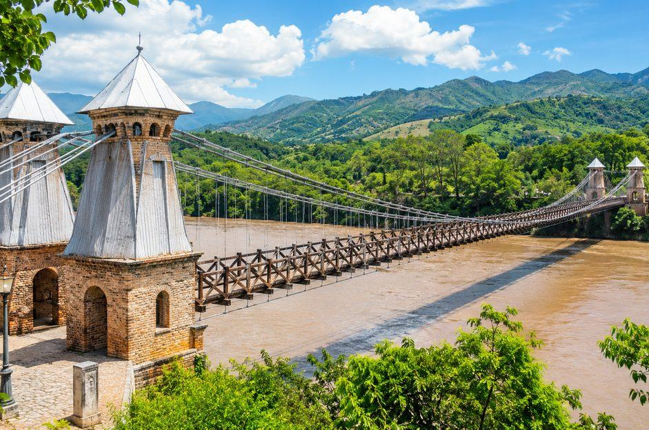
Santa Fe de Antioquia
Santa Fe de Antioquia
A colonial heritage town with cobbled streets, warm weather and the famous Puente de Occidente.
Pueblo patrimonio colonial con calles empedradas, clima caliente y el famoso Puente de Occidente.
Book with PaolaReservar con Paola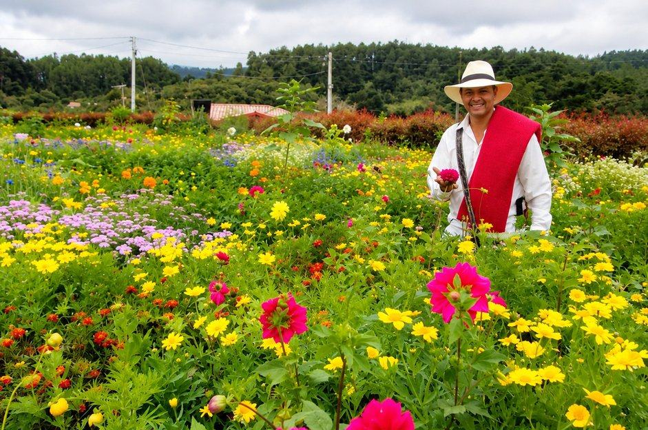
Santa Elena, land of the silleteros
Santa Elena silletera
Visit a flower farm in the mountains and learn the silletero tradition up close.
Visita una finca de flores en la montaña y conoce de cerca la tradición silletera.
or ask Paola on WhatsAppo pregúntale a Paola por WhatsAppJardín
Jardín
A coffee town with colorful balconies and mountain views. Because of the distance, best with an overnight stay.
Pueblo cafetero de balcones de colores y montañas. Por la distancia, mejor con una noche allá.
Book with PaolaReservar con PaolaRío Claro
Río Claro
A marble canyon with crystal-clear water, rafting and caves. About 3 hours from Medellín.
Cañón de mármol con aguas cristalinas, rafting y cavernas. A unas 3 horas de Medellín.
or ask Paola on WhatsAppo pregúntale a Paola por WhatsAppHacienda Nápoles
Hacienda Nápoles
A theme park with animals, water parks and museums. Long trip: leave early.
Parque temático con animales, parques acuáticos y museos. Viaje largo: salir temprano.
or ask Paola on WhatsAppo pregúntale a Paola por WhatsAppAirport pickup
Recogida en el aeropuerto
Someone you can trust waits for you at José María Córdova airport and takes you to your hotel.
Alguien de confianza te espera en el aeropuerto José María Córdova y te lleva a tu hotel.
or ask Paola on WhatsAppo pregúntale a Paola por WhatsAppUseful phrases
Frases útiles
Tap a phrase and your phone says it out loud in Spanish, so you can talk with taxi drivers, waiters and shop owners.
Toca una frase y tu celular la dice en voz alta en español, para hablar con taxistas, meseros y vendedores.
GreetingsSaludos
Taxi & directionsTaxi y direcciones
RestaurantRestaurante
ShoppingDe compras
HelpAyuda
Tip: turn up the volume. The voice works even without internet on most phones.Consejo: sube el volumen. La voz funciona incluso sin internet en la mayoría de celulares.
Mar Medellín: the sea arrives in the city
Mar Medellín: el mar llega a la ciudad
The most anticipated opening in Medellín. Plan your trip around it!
La inauguración más esperada de Medellín. ¡Programe su viaje para conocerlo!
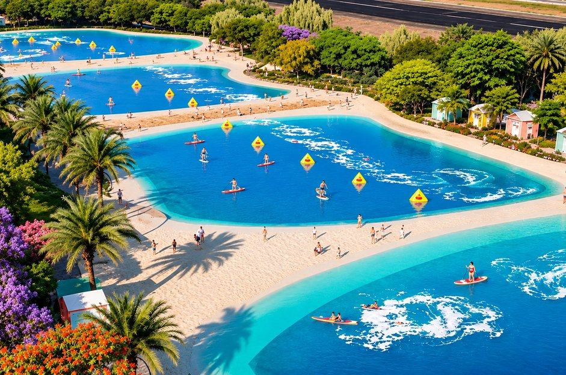
Illustrative image: the final design may change.Imagen ilustrativa: el diseño final puede cambiar.
What it is
Qué es
Medellín is in the mountains, far from the ocean… so it’s building its own. Mar Medellín is the heart of the Gran Parque Medellín: a 12,000 m² artificial sea, the size of 10 Olympic pools, with more than 5,000 m² of sand beach. Something unique in Colombia.
Medellín está entre montañas, lejos del océano… así que está construyendo el suyo. Mar Medellín es el corazón del Gran Parque Medellín: un mar artificial de 12.000 m², del tamaño de 10 piscinas olímpicas, con más de 5.000 m² de playa de arena. Algo único en Colombia.
How big? The mayor compares it to the beach at Johnny Cay, twice the beach at Taganga (Santa Marta) and half of San Andrés’ main beach.
¿Qué tan grande? El alcalde lo compara con la playa de Johnny Cay, el doble de la playa de Taganga (Santa Marta) y la mitad de la playa principal de San Andrés.
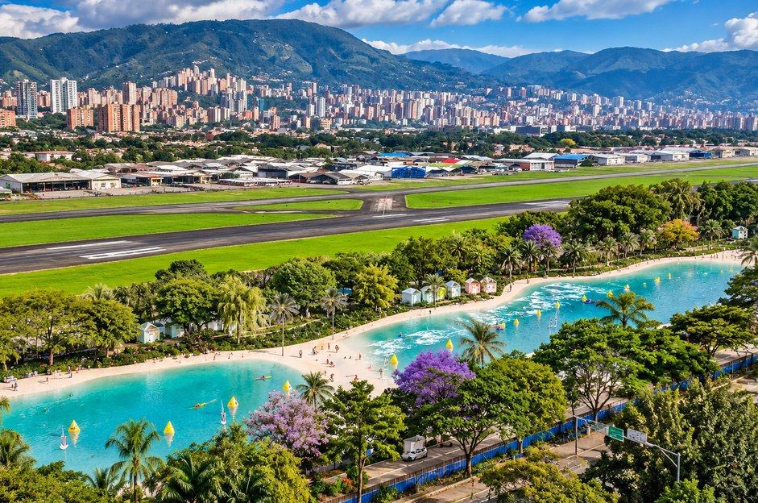
What you’ll be able to do
Qué podrá hacer
Kayak, paddle, sailing and snorkeling in the sea (no motor sports). The deepest point is about 1.65 m.
Kayak, remo, vela y buceo en el mar (sin deportes de motor). El punto más hondo tiene unos 1,65 m.
A wave pool with water slides, plus 2 Olympic and 2 semi-Olympic pools.
Una piscina de olas con toboganes, y además 2 piscinas olímpicas y 2 semiolímpicas.
More than 2 km of walking paths, a 3 km jogging and cycling track, the Mariana Pajón BMX track, plazas, shops and over 80,000 m² of green areas. Space for 39 sports.
Más de 2 km de senderos, una pista de trote y ciclismo de 3 km, la pista de BMX Mariana Pajón, plazoletas, zonas comerciales y más de 80.000 m² de zonas verdes. Espacio para 39 deportes.
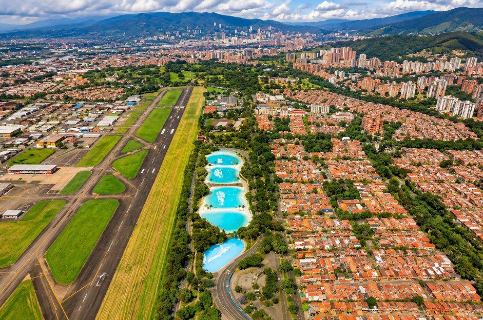
Quick guide
Ficha rápida
Where: next to the Olaya Herrera airport (Aeroparque Juan Pablo II), in the middle of the city, between El Poblado, Belén and Laureles.
Dónde: al lado del aeropuerto Olaya Herrera (Aeroparque Juan Pablo II), en plena ciudad, entre El Poblado, Belén y Laureles.
When: opening planned for 2027. Work is still underway and dates can change: check the date before you plan your visit.
Cuándo: apertura prevista para 2027. Las obras siguen en marcha y las fechas pueden cambiar: confirme la fecha antes de programar su visita.
How to get there: by taxi or Uber, about 10–15 min from El Poblado or Laureles.
Cómo llegar: en taxi o Uber, a unos 10–15 min de El Poblado o Laureles.
What to bring: swimsuit, sunscreen, hat, sandals and a towel. It’s warm: about 26–28 °C.
Qué llevar: vestido de baño, bloqueador, sombrero, chanclas y toalla. Hace calor: unos 26–28 °C.
Google MapsFrom the airport to the city
Del aeropuerto a la ciudad
Medellín’s international airport, José María Córdova (MDE), is in Rionegro, on the other side of the mountain. The ride to El Poblado takes about 30–45 minutes through the Túnel de Oriente, and longer through Las Palmas or with traffic.
El aeropuerto internacional de Medellín, el José María Córdova (MDE), queda en Rionegro, al otro lado de la montaña. El viaje hasta El Poblado toma unos 30 a 45 minutos por el Túnel de Oriente, y más por Las Palmas o con tráfico.
No matter how many of you travel, there’s always a vehicle that fits
No importa cuántos viajen: siempre hay un vehículo a la medida
We have vehicles available for the number of people we pick up: as a couple, with the family or with a big group. A trusted person will be waiting for you when you land and will take you straight to your hotel.
Tenemos vehículos disponibles para la cantidad de personas que vamos a recoger: en pareja, en familia o con un grupo grande. Una persona de confianza lo estará esperando cuando aterrice y lo llevará directo a su hotel.
Book your pickup on WhatsAppReserve su recogida por WhatsAppHow to get to your hotelCómo llegar a su hotel
Official white taxi
Taxi blanco oficial
The white airport taxis wait in a marked line at the exit. Their fare to Medellín is fixed.
Los taxis blancos del aeropuerto esperan en una fila señalizada a la salida. Su tarifa a Medellín es fija.
Tip: Ask the price before you get in and whether it includes the Túnel de Oriente toll. Have pesos in cash.
Consejo: Pregunte el precio antes de subirse y si incluye el peaje del Túnel de Oriente. Tenga pesos en efectivo.
Uber or DiDi
Uber o DiDi
Uber has an official pickup point at the airport. Prices change with demand and traffic: check the fare in the app before you confirm, and make sure the car and plate match.
Uber tiene un punto oficial de recogida en el aeropuerto. El precio cambia según la demanda y el tráfico: revise la tarifa en la app antes de confirmar y verifique que el carro y la placa coincidan.
These apps work normally in Medellín, although Colombia still has no law that regulates them.
Estas apps funcionan normalmente en Medellín, aunque Colombia todavía no tiene una ley que las regule.
Airport bus: the cheapest option
Bus del aeropuerto: la opción más económica
You can pay the airport buses (Combuses) in cash, with a Cívica card, with a QR code or by card. They take you to the city; from there, take a taxi or app to your hotel.
Los buses del aeropuerto (Combuses) se pagan en efectivo, con tarjeta Cívica, con código QR o con tarjeta. Lo dejan en la ciudad; de ahí, tome taxi o app hasta su hotel.
Tip: Great if you travel light. With big suitcases or at night, a taxi is more comfortable.
Consejo: Ideal si viaja liviano. Con maletas grandes o de noche, es más cómodo el taxi.
Shared taxi (colectivo)
Taxi compartido (colectivo)
A white taxi you share with other passengers. It leaves when it’s full and usually drops you near the San Diego mall.
Un taxi blanco que comparte con otros pasajeros. Sale cuando se llena y normalmente lo deja cerca del centro comercial San Diego.
Getting around like a paisa
Cómo moverse como un paisa
Medellín has the only metro in Colombia, and it connects with cable cars, a tram and buses. It’s clean, safe, cheap and a sight in itself.
Medellín tiene el único metro de Colombia, y se conecta con cables, un tranvía y buses. Es limpio, seguro, económico y un paseo en sí mismo.
NEW: pay with your bank card
NUEVO: pague con su tarjeta del banco
Since November 11, 2026, you can enter the Metro by simply tapping your contactless Visa or Mastercard (debit or credit) on the turnstile, or your phone or watch with Apple Pay or Google Pay. No Cívica card and no top-ups needed.
Desde el 11 de noviembre de 2026 puede entrar al Metro con solo acercar al torniquete su tarjeta Visa o Mastercard sin contacto (débito o crédito), o su celular o reloj con Apple Pay o Google Pay. Sin tarjeta Cívica y sin recargas.
Where: for now on Metro Lines A and B, at the turnstiles marked for card payment. It is being rolled out gradually, so not every turnstile has it yet.
Dónde: por ahora en las líneas A y B del Metro, en los torniquetes señalizados para pago con tarjeta. Se está instalando poco a poco, así que todavía no todos lo tienen.
Tip: use a card without foreign transaction fees. For the Metrocable, tram and buses, or if your turnstile doesn’t take cards, keep the Cívica option below.
Consejo: use una tarjeta sin comisión por compras en el exterior. Para el Metrocable, el tranvía y los buses, o si el torniquete no recibe tarjetas, tenga a mano la opción de la Cívica que está abajo.
The Cívica card and the fare
La tarjeta Cívica y el pasaje
The classic option, valid on the whole system: the Cívica card or the QR code from the Cívica app. Paper tickets are being phased out.
La opción de siempre, válida en todo el sistema: la tarjeta Cívica o el código QR de la app Cívica. El tiquete de papel está saliendo de circulación.
One system: the same fare system includes the Metro, Metrocable, tram and Metroplús buses. Each trip costs less with a personalized Cívica card than with a regular one.
Un solo sistema: el mismo pasaje sirve para el Metro, el Metrocable, el tranvía y los buses de Metroplús. Cada viaje sale más barato con la tarjeta Cívica personalizada que con la tarjeta al portador.
Top up: at the station machines, in the Cívica app, Nequi or the Bancolombia app. Since November 2026 some stations no longer have a ticket window.
Recargar: en las máquinas de las estaciones, en la app Cívica, Nequi o la app de Bancolombia. Desde noviembre de 2026 algunas estaciones ya no tienen taquilla.
Metrocable: the city from the air
Metrocable: la ciudad desde el aire
Cable cars connected to the Metro that climb the hills. Your favorites: Line K (Acevedo–Santo Domingo) and Line J (San Javier, near Comuna 13).
Cables conectados al Metro que suben a las lomas. Los favoritos: la Línea K (Acevedo–Santo Domingo) y la Línea J (San Javier, cerca de la Comuna 13).
To Parque Arví: from Santo Domingo take Line L. It has its own fare, separate from the Metro. Entry to the park is also separate.
Al Parque Arví: desde Santo Domingo tome la Línea L. Tiene su propia tarifa, aparte del Metro. La entrada al parque también se paga aparte.
The Ayacucho tram
El tranvía de Ayacucho
A modern tram that has run since 2016 between San Antonio and Oriente stations, about 4 km through the Buenos Aires neighborhood. It connects with Metrocable lines M and H: a nice route to see a traditional part of the city.
Un tranvía moderno que funciona desde 2016 entre las estaciones San Antonio y Oriente, unos 4 km por el barrio Buenos Aires. Se conecta con los Metrocables M y H: una linda ruta para ver una zona tradicional de la ciudad.
EnCicla: free public bikes
EnCicla: bicicletas públicas gratis
Foreigners can sign up online for free with a passport. Approval takes up to 3 business days, so register before your trip. Tourists must update their details every 8 days.
Los extranjeros se pueden inscribir gratis por internet con el pasaporte. La aprobación tarda hasta 3 días hábiles, así que inscríbase antes del viaje. Los turistas deben actualizar sus datos cada 8 días.
“Cultura Metro”: how locals ride
“Cultura Metro”: así viajan los paisas
Paisas are proud of their Metro and take care of it. To blend in:
Los paisas están orgullosos de su Metro y lo cuidan. Para no desentonar:
Don’t eat or drink inside stations or trains.
No coma ni beba dentro de las estaciones ni de los trenes.
Give your seat to seniors, pregnant women and people with disabilities.
Ceda el puesto a adultos mayores, embarazadas y personas con discapacidad.
On escalators, stand on the right and leave the left free. Let people off before you get on.
En las escaleras eléctricas, quédese a la derecha y deje libre la izquierda. Deje salir antes de entrar.
Taxis and apps
Taxis y aplicaciones
Uber, DiDi and Cabify are easy and work 24/7.
Uber, DiDi y Cabify son fáciles y funcionan las 24 horas.
Yellow taxis use a meter: make sure it’s on. At night, better order through an app.
Los taxis amarillos usan taxímetro: verifique que esté encendido. De noche, mejor pídalo por aplicación.
Parque Explora & the Botanical Garden
Parque Explora y el Jardín Botánico
Science, an aquarium, the stars and a garden full of orchids, all next to the same Metro station. A full day for families and the curious.
Ciencia, acuario, estrellas y un jardín lleno de orquídeas, todo junto a la misma estación del Metro. Un día completo para familias y curiosos.
What it is: An interactive science museum, the opposite of a boring one: you touch, play and experiment. It has a large freshwater aquarium with fish from Colombia’s rivers, a coral-reef area and a vivarium with reptiles and amphibians.
Qué es: Un museo de ciencia interactivo, todo lo contrario a uno aburrido: aquí se toca, se juega y se experimenta. Tiene un gran acuario de agua dulce con peces de los ríos de Colombia, una zona de arrecife de coral y un vivario con reptiles y anfibios.
Tickets: there is a general ticket and another one that also includes the Planetarium. Colombian residents pay less, so foreigners should bring their passport.
Entradas: hay una entrada general y otra que también incluye el Planetario. Los residentes en Colombia pagan menos; si es extranjero, lleve el pasaporte.
Hours: Tuesday to Friday 8:30 a.m.–5:30 p.m. (tickets until 4 p.m.); weekends and holidays 10 a.m.–6:30 p.m. (tickets until 5 p.m.). Closed on Mondays; if Monday is a holiday, it closes on Tuesday.
Horario: Martes a viernes de 8:30 a. m. a 5:30 p. m. (taquilla hasta las 4 p. m.); fines de semana y festivos de 10 a. m. a 6:30 p. m. (taquilla hasta las 5 p. m.). Cierra los lunes; si el lunes es festivo, cierra el martes.
Planetarium: right across the street and run by Parque Explora, with shows about the universe under its dome.
Planetario: queda justo al frente y lo administra el Parque Explora, con funciones sobre el universo bajo su domo.
Google MapsWhat it is: A green oasis in the middle of the city, with free entry (except special events). Don’t miss the Orquideorama, a giant wooden structure shaped like flowers where orchids are shown.
Qué es: Un oasis verde en plena ciudad, con entrada gratis (salvo eventos especiales). No se pierda el Orquideorama, una gran estructura de madera en forma de flores donde se exhiben orquídeas.
Hours: Tuesday to Sunday and holidays, about 9 a.m.–4 p.m.; closed on Mondays. Confirm before going.
Horario: Martes a domingo y festivos, más o menos de 9 a. m. a 4 p. m.; cierra los lunes. Confírmelo antes de ir.
Lunch: the In Situ restaurant, inside the garden. Book ahead.
Almuerzo: el restaurante In Situ, dentro del jardín. Reserve antes.
Google MapsA perfect family day
Un día perfecto en familia
Morning: aquarium and rooms at Parque Explora. Lunch: In Situ at the Botanical Garden. Afternoon: walk the garden or see a Planetarium show. Parque Norte is right next door too.
Mañana: acuario y salas del Parque Explora. Almuerzo: In Situ, en el Jardín Botánico. Tarde: recorra el jardín o vea una función del Planetario. El Parque Norte también queda al lado.
Hidden gems: Prado and the 4 Sur bridge
Joyas escondidas: Prado y el puente de la 4 Sur
Two places most visitors miss: a neighborhood of century-old mansions and the city’s most photographed bridge.
Dos lugares que la mayoría de visitantes no conoce: un barrio de mansiones centenarias y el puente más fotografiado de la ciudad.
What it is: Medellín’s only heritage neighborhood, with about 265 protected buildings. It’s where the city’s wealthy families lived about 100 years ago: mansions in many styles, from Egyptian to Republican. A paradise for architecture and photography lovers.
Qué es: El único barrio patrimonial de Medellín, con unos 265 inmuebles protegidos. Aquí vivían las familias adineradas de la ciudad hace unos 100 años: mansiones de muchos estilos, del egipcio al republicano. Un paraíso para los amantes de la arquitectura y la fotografía.
Palacio Egipcio: a house inspired by ancient Egypt, today a cultural center with guided tours. Days change: book ahead through its Instagram, @palacio_egipcio.
Palacio Egipcio: una casa inspirada en el antiguo Egipto, hoy centro cultural con visitas guiadas. Los días cambian: reserve antes por su Instagram, @palacio_egipcio.
Salón Prado: a restored mansion with a café, restaurant and rooftop: a good stop during your walk.
Salón Prado: una mansión restaurada con café, restaurante y terraza: buena parada durante el recorrido.
Tips: Go during the day, ideally with a guide or by taxi, since it borders downtown. Keep your phone and camera put away between photos.
Recomendaciones: Vaya de día, ojalá con guía o en taxi, porque limita con el centro. Guarde el celular y la cámara entre foto y foto.
Google MapsWhat it is: The Gilberto Echeverri Mejía bridge, known as the “4 Sur”: 560 meters long, the longest urban bridge in Colombia. At night its cable towers light up and it becomes a favorite for photos and videos.
Qué es: El puente Gilberto Echeverri Mejía, conocido como “la 4 Sur”: 560 metros de largo, el puente urbano más largo de Colombia. De noche se iluminan sus torres de cables y se vuelve el favorito para fotos y videos.
Tips: Enjoy it from a taxi or car crossing it at night, or take your photos at sunset with company. Don’t walk under or around the bridge after dark.
Recomendaciones: Disfrútelo desde un taxi o carro que lo cruce de noche, o tome sus fotos al atardecer y acompañado. No camine por debajo ni por los alrededores del puente cuando oscurezca.
Google MapsColombian coffee: where to drink it and take it home
Café colombiano: dónde tomarlo y llevarlo
You are in coffee country. Beyond the classic “tinto”, Medellín has world-class specialty coffee shops.
Está en tierra cafetera. Además del clásico “tinto”, Medellín tiene cafeterías de especialidad de talla mundial.
How to order like a local
Cómo pedir como un paisa
Tinto: a small cup of black coffee. Not wine!
Tinto: una tacita de café negro.
Perico: coffee with a little milk, like a small latte.
Perico: café con un poco de leche.
Café con leche: a bigger cup with more milk.
Café con leche: una taza más grande con más leche.
Why go: Medellín’s best-known specialty coffee, with beans from Colombian farms. Its Laureles shop ranked #38 among South America’s 100 Best Coffee Shops in 2026. Its Vía Primavera shop is the classic spot to sit and watch El Poblado go by.
Por qué ir: El café de especialidad más conocido de Medellín, con granos de fincas colombianas. Su sede de Laureles quedó de número 38 entre las 100 mejores cafeterías de Suramérica en 2026. La de la Vía Primavera es el lugar clásico para sentarse a ver pasar El Poblado.
Take some home: they sell bags of beans in their shops, in supermarkets and even at the airport, in both the domestic and international areas.
Para llevar: venden bolsas de café en sus tiendas, en supermercados y hasta en el aeropuerto, en las zonas nacional e internacional.
Google MapsMore coffee shops worth a visit
Más cafeterías que valen la pena
Rituales Compañía de Café · Laureles (Circular 74A #39B-22). #64 on the same 2026 South America ranking.
Rituales Compañía de Café · Laureles (Circular 74A #39B-22). Número 64 en el mismo ranking suramericano de 2026.
Simón Coffee · El Poblado. #80 on the 2026 ranking.
Simón Coffee · El Poblado. Número 80 en el ranking de 2026.
Al Alma · El Poblado (Carrera 33 #7-99) and other locations: good coffee and brunch.
Al Alma · El Poblado (Carrera 33 #7-99) y otras sedes: buen café y brunch.
Check hours on Google Maps before you go.
Revise el horario en Google Maps antes de ir.
Visit a coffee farm
Visite una finca cafetera
In Santa Elena, about 40 minutes from Medellín, there are tours where you see the whole process, from the plant to the cup. They last about 6 hours, and many include transportation.
En Santa Elena, a unos 40 minutos de Medellín, hay recorridos donde ve todo el proceso, de la mata a la taza. Duran unas 6 horas y muchos incluyen el transporte.
Taking coffee to the U.S.
Llevar café a EE. UU.
Roasted beans or ground coffee are allowed in your carry-on and checked bags. At the airport they may ask you to take them out for the X-ray.
El café tostado en grano o molido está permitido en el equipaje de mano y en la maleta. En el aeropuerto le pueden pedir que lo saque para pasarlo por rayos X.
Declare it when you arrive in the U.S. Don’t bring green (unroasted) beans: they are restricted.
Declárelo al llegar a EE. UU. No lleve café verde (sin tostar): está restringido.
About us
Quiénes somos
We are paisas in love with our homeland. Behind this app there are real people who show their faces, advise you and are there for you.
Somos paisas enamoradas de nuestra tierra. Detrás de esta app hay personas reales que dan la cara, te asesoran y te acompañan.
Hi, I’m María Ortiz
Hola, soy María Ortiz
A paisa at heart and founder of Mokea Digital LLC
Paisa de corazón y fundadora de Mokea Digital LLC
My story
Mi historia
I’m a paisa, in love with and proud of my homeland. I lived in Medellín for 57 of my 60 years: I know its streets, its mountains, its food and, above all, its people. Three years ago I moved to the United States, but Medellín came with me.
Soy paisa, enamorada y orgullosa de mi tierra. Viví en Medellín 57 de mis 60 años: conozco sus calles, sus montañas, su comida y, sobre todo, su gente. Hace tres años me vine a vivir a Estados Unidos, pero Medellín se vino conmigo.
Why I created this app
Por qué creé esta app
Here, something happened again and again: every time I said I was from Medellín, people told me with excitement, “I want to go, but…!” Some were afraid of arriving without knowing anyone. Others had bought a guidebook and couldn’t find it anymore, or searched on Google and ended up more confused.
Aquí me pasaba algo una y otra vez: cada vez que contaba que era de Medellín, la gente me decía con ilusión “¡Quiero ir, pero…!”. A unos les daba miedo llegar sin conocer a nadie. Otros habían comprado una guía y ya no sabían dónde la tenían, o buscaban en Google y terminaban más confundidos.
So I thought: what if I put Medellín in their pocket? That’s how Medellín a un clic was born: everything worth seeing in my city, in English and Spanish, on your phone. And with something no guidebook has: real people behind it, who show their faces, advise you and are there for you.
Entonces pensé: ¿y si les pongo Medellín en el bolsillo? Así nació Medellín a un clic: todo lo que vale la pena de mi ciudad, en inglés y español, en tu celular. Y con algo que ninguna guía tiene: personas reales detrás, que dan la cara, te asesoran y te acompañan.
What I want for you
Lo que quiero para ti
That you arrive at ease, feel at home and leave wanting to come back. That you try a real bandeja paisa, watch the sunset from a viewpoint, dance in the street and hear a paisa tell you “con mucho gusto”. That’s Medellín, and that’s what I want you to experience.
Que llegues tranquilo, que te sientas en casa y que te vayas con ganas de volver. Que pruebes una bandeja paisa de verdad, que veas el atardecer desde un mirador, que bailes en la calle y que oigas a un paisa decirte “con mucho gusto”. Eso es Medellín, y eso es lo que quiero que vivas.
With love,Con cariño,
María
Who is behind your tripQuién está detrás de tu viaje
María Ortiz
A paisa who knows Medellín inside out and now lives in the U.S.: she understands what an American traveler needs.
Paisa que conoce Medellín de memoria y hoy vive en EE. UU.: entiende lo que necesita un viajero americano.
Paola Tobón
Born and raised in Medellín. For 12 years she has driven travelers around the city and all of Antioquia.
Nacida y criada en Medellín. Hace 12 años lleva viajeros por la ciudad y toda Antioquia.
Meet Paola
Conoce a Paola
Paola was born in Medellín and has lived here all her life. For 12 years she has welcomed travelers as if they were family, taking them to discover the city and all of Antioquia.
Paola nació en Medellín y ha vivido aquí toda su vida. Hace 12 años recibe viajeros como si fueran de la familia y los lleva a conocer la ciudad y toda Antioquia.
She loves meeting people from other cultures and showing them, from her own experience, why to her Medellín is the best place in the world.
Le encanta conocer personas de otras culturas y mostrarles, desde su propia vivencia, por qué para ella Medellín es el mejor lugar del mundo.
Ask her about her favorite place and she'll answer right away: Guatapé. Close to the city, colorful, warm and always full of joy.
Si le preguntas su lugar favorito, te dirá sin dudar: Guatapé. Cerca de la ciudad, colorido, cálido y siempre lleno de alegría.
With Paola you don't just reach your destination: you arrive at ease, and with a friend in Medellín.
Con Paola no solo llegas a tu destino: llegas tranquilo y con una amiga en Medellín.
Our promise
Nuestra promesa
Information we check and update.
Información que revisamos y actualizamos.
Real people you can write to, before and during your trip.
Personas reales a las que puedes escribirles, antes y durante el viaje.
An app made for American travelers, in English and Spanish.
Una app hecha para viajeros americanos, en inglés y español.
Museo El Castillo
Museo El Castillo
A real castle in El Poblado, with gardens to walk, take photos and relax.
Un castillo de verdad en El Poblado, con jardines para caminar, tomar fotos y descansar.
What it is: Built in 1930 and inspired by the castles of the Loire Valley in France, it was the home of a wealthy Antioquian family. Inside you see their furniture, porcelain, crystal, stained glass, tapestries and paintings. Outside, the gardens are the heart of the visit: perfect for a calm walk or a picnic.
Qué es: Construido en 1930 e inspirado en los castillos del Valle del Loira, en Francia, fue la casa de una familia adinerada de Antioquia. Adentro se ven sus muebles, porcelanas, cristales, vitrales, tapices y pinturas. Afuera, los jardines son el centro del plan: ideales para caminar con calma o hacer un pícnic.
Visit: you can take the guided tour of the castle and gardens, or visit only the gardens. Foreigners and Colombian adults have different rates.
Visita: puede hacer el recorrido guiado por el castillo y los jardines, o visitar solo los jardines. Los extranjeros y los adultos colombianos tienen tarifas distintas.
Hours: Monday to Friday 9 a.m.–5 p.m.; weekends and holidays 10 a.m.–5 p.m. You can stay in the gardens until 6 p.m.
Horario: Lunes a viernes de 9 a. m. a 5 p. m.; fines de semana y festivos de 10 a. m. a 5 p. m. En los jardines se puede estar hasta las 6 p. m.
Where: Calle 9 Sur #32-269, El Poblado (Loma Los Balsos). Easiest by taxi or app; drivers know it. Phone: +57 604 266 0900.
Dónde: Calle 9 Sur #32-269, El Poblado (Loma Los Balsos). Lo más fácil es en taxi o por app; los conductores lo conocen. Teléfono: +57 604 266 0900.
Tips: Take the guided tour: the guide tells the story of each room. Photos are not allowed inside the castle, only outside. Go on a weekday afternoon for the calmest gardens.
Consejos: Haga el recorrido guiado: el guía cuenta la historia de cada salón. Adentro del castillo no se permiten fotos, solo afuera. Vaya entre semana en la tarde para encontrar los jardines más tranquilos.
See Google reviews & mapVer reseñas y mapa en GoogleStreet food & the best burgers
Comida callejera y las mejores hamburguesas
After the party or for a quick dinner: what locals really eat.
Para después de la rumba o una comida rápida: lo que de verdad comen los paisas.
Colombian hot dogs
Perros calientes colombianos
What they are: They are nothing like a plain hot dog: they come loaded with crushed potato chips, cheese, quail eggs, pineapple sauce and more. The food guide TasteAtlas ranked Colombian hot dogs as the best in Latin America.
Qué son: No se parecen a un hot dog sencillo: vienen cargados de papitas trituradas, queso, huevos de codorniz, salsa de piña y más. La guía gastronómica TasteAtlas eligió los perros calientes colombianos como los mejores de Latinoamérica.
A legend: “Las perras de San Marcos” in Envigado, on Carrera 43A with Transversal 31: a street stand open every day from 5 p.m. Their star is the “perra”, a roll filled with bacon, mozzarella, cabbage salad and sauces. Reggaeton stars like J Balvin and Maluma have eaten there.
Una leyenda: “Las perras de San Marcos”, en Envigado, sobre la carrera 43A con transversal 31: un puesto callejero que abre todos los días desde las 5 p. m. Su estrella es la “perra”, un pan relleno de tocineta, mozzarella, ensalada de repollo y salsas. Reggaetoneros como J Balvin y Maluma han comido ahí.
See Google reviews & mapVer reseñas y mapa en GoogleBurger Master winners
Ganadoras del Burger Master
What it is: Burger Master is Colombia’s biggest burger festival, born in Medellín in 2017. Every April, hundreds of restaurants compete and the public votes. These are the Medellín winners of the 2026 edition:
Qué es: El Burger Master es el festival de hamburguesas más grande de Colombia y nació en Medellín en 2017. Cada abril compiten cientos de restaurantes y el público vota. Estas son las ganadoras de Medellín en la edición 2026:
Bunker Burger: best burger in the city with its “Bacon beef”.
Also among the winners: LF Burger, Bramante (2025 winner), Chum Burgers (2024 winner) and Animal Cocina.
Bunker Burger: la mejor hamburguesa de la ciudad, con su “Bacon beef”.
También entre las ganadoras: LF Burger, Bramante (ganadora en 2025), Chum Burgers (ganadora en 2024) y Animal Cocina.
More local favorites: Pigasus (Burger Master Medellín 2022 winner; its signature burger comes with crispy chicharrón and has about 15 locations), Grill Station (a Provenza classic, Carrera 34 #7-90, also in Laureles) and Office Burger (Laureles and El Poblado). Both were in the 2022 top 5.
Más favoritas de la ciudad: Pigasus (ganadora del Burger Master Medellín 2022; su hamburguesa insignia lleva chicharrón crocante y tiene unas 15 sedes), Grill Station (un clásico de Provenza, Carrera 34 #7-90, también en Laureles) y Office Burger (Laureles y El Poblado). Las dos estuvieron en el top 5 de 2022.
Tip: Several have more than one location: search the name on Google Maps to find the one closest to your hotel and check hours before you go.
Consejo: Varias tienen más de una sede: busque el nombre en Google Maps para encontrar la más cerca de su hotel y revise el horario antes de ir.
Parque Norte: a family day
Parque Norte: plan en familia
The city’s amusement park, among big trees and right next to the Metro.
El parque de diversiones de la ciudad, entre árboles grandes y al lado del Metro.
What it is: Medellín’s classic amusement park, run by the city (Metroparques). It has about 20 mechanical rides for children and adults: the Kamikaze, bumper cars, the Águila, the Viaje al Centro de la Tierra, the Avión, the Tren Mítico, a water slide that drops into a guitar-shaped pool, and newer ones like mini-motorbikes and single-seat buggies. It’s the only park in Medellín with mechanical rides for both kids and grown-ups.
Qué es: El parque de diversiones clásico de Medellín, manejado por la ciudad (Metroparques). Tiene unas 20 atracciones mecánicas para niños y adultos: el Kamikaze, los carros chocones, el Águila, el Viaje al Centro de la Tierra, el Avión, el Tren Mítico, un tobogán de agua que cae a una piscina en forma de guitarra, y nuevas como las minimotos y los buggies monoplaza. Es el único parque de Medellín con atracciones mecánicas para niños y grandes.
Tickets: You buy a wristband (“brazalete”): the unlimited one gives access to all the rides. There are frequent discounts on holidays and in vacation season. Check the current price before you go.
Entrada: Se compra un brazalete: el ilimitado da acceso a todas las atracciones. Hay descuentos frecuentes en festivos y vacaciones. Confirme el precio antes de ir.
Hours: Usually closed on Mondays. Tuesday to Friday about 9:30 a.m.–5 p.m.; weekends and holidays about 10:30 a.m.–6 p.m. Hours change in high season: confirm on Google.
Horario: Normalmente cierra los lunes. De martes a viernes, más o menos de 9:30 a. m. a 5 p. m.; fines de semana y festivos, de 10:30 a. m. a 6 p. m. El horario cambia en temporada: confírmelo en Google.
How to get there: Metro Line A to Universidad station; the park is a short walk away. Right next to it are the Botanical Garden (free) and Parque Explora with its aquarium: you can make it a full family day.
Cómo llegar: Metro línea A hasta la estación Universidad; el parque queda a pocos pasos. Al lado están el Jardín Botánico (gratis) y el Parque Explora con su acuario: puede armar un día completo en familia.
Tips: Go on a weekday to avoid lines. Some rides have height limits for kids. Bring water and snacks, and use the shade of the trees to rest.
Consejos: Vaya entre semana para evitar filas. Algunas atracciones tienen estatura mínima para los niños. Lleve agua y algo de comer, y aproveche la sombra de los árboles para descansar.
What to bring: Comfortable clothes and shoes, sunscreen, a cap and a swimsuit or a change of clothes for the water slide.
Qué llevar: Ropa y zapatos cómodos, bloqueador, gorra y vestido de baño o una muda de ropa para el tobogán de agua.
See Google reviews & mapVer reseñas y mapa en GoogleA short history of Medellín
The capital of Antioquia, nestled in the mountains.
A city in a valley
Medellín sits in the Aburrá Valley, surrounded by the Central Andes and crossed by the Medellín River. Because of its mild climate and year-round flowers, it is known as "the City of Eternal Spring".
It was born in 1675 as the Villa de Nuestra Señora de la Candelaria de Medellín, which is why the Virgin of La Candelaria is its patron saint.
From industry to innovation
In the 20th century it was Colombia's industrial capital, home to famous textile mills and factories. In the 1980s and 90s it went through a very hard time of violence: in 1991 it was considered the most violent city in the world.
Its people decided to transform it. Today it is recognized worldwide as a model of innovation, social urbanism and tourism.
What makes it unique
The Metro, the only one in Colombia, has run since 1995, and paisas care for it with pride: the famous "Metro Culture".
The Metrocable climbed the mountains to connect hillside neighborhoods with the rest of the city.
The Flower Festival every August, with the Silleteros Parade: farmers who carry huge flower arrangements on their backs.
Coffee, arepas, beans and a "tintico" (small black coffee) at any time of day.
Breve reseña de Medellín
La capital de Antioquia, entre montañas.
Una ciudad en un valle
Medellín está en el Valle de Aburrá, rodeada por la cordillera Central de los Andes y atravesada por el río Medellín. Por su clima templado y sus flores todo el año la llaman "la Ciudad de la Eterna Primavera".
Nació como la Villa de Nuestra Señora de la Candelaria de Medellín en 1675. Por eso la Virgen de la Candelaria es su patrona.
De la industria a la innovación
En el siglo XX fue la capital industrial de Colombia, con textileras y fábricas famosas. En los años 80 y 90 vivió una época de violencia muy dura: en 1991 llegó a ser considerada la ciudad más violenta del mundo.
Su gente decidió transformarla. Hoy es reconocida en el mundo como ejemplo de innovación, urbanismo social y turismo.
Lo que la hace única
El Metro, el único de Colombia, funciona desde 1995 y los paisas lo cuidan con orgullo: es la famosa "Cultura Metro".
El Metrocable subió a las montañas para conectar los barrios altos con el resto de la ciudad.
La Feria de las Flores en agosto, con el desfile de silleteros: campesinos que cargan a la espalda enormes arreglos florales.
Café, arepa, frijoles y un "tintico" a cualquier hora.
International awards
From a feared city to an award-winning one.
Sustainable Transport Award (ITDP)
For its integrated Metro, Metrocable and outdoor escalators that connect neighborhoods.
The world's most innovative city
Won the "City of the Year" contest by The Wall Street Journal and Citigroup, beating New York and Tel Aviv.
Lee Kuan Yew Prize · "The Nobel of cities"
Received in Singapore for its urban transformation over two decades. It includes a gold medal and $300,000.
Most transformative city of the year
Bravo Awards in Miami, known as the "Oscars" of Latin American business.
C40 Cities Award
For its Green Corridors, which lowered the city's temperature by planting trees and gardens.
National Geographic: "Best of the World"
Medellín made the list of 25 must-see places on the planet for 2026, with a special mention of Comuna 13.
Top walking cities
No. 32 in the world in GuruWalk's "Best 100 Walking Cities" ranking.
Hábitat LATAM Award
Won in Guadalajara as the Latin American city with the best urban transformation and sustainability, scoring 100 out of 100 in urban transformation.
Reconocimientos internacionales
De ciudad temida a ciudad premiada.
Premio Transporte Sostenible (ITDP)
Por su sistema integrado de Metro, Metrocable y escaleras eléctricas que conectan los barrios.
La ciudad más innovadora del mundo
Ganó el concurso "City of the Year" de The Wall Street Journal y Citigroup, frente a Nueva York y Tel Aviv.
Premio Lee Kuan Yew · "El Nobel de las ciudades"
Lo recibió en Singapur por su transformación urbana de las últimas dos décadas. Incluye una medalla de oro y 300.000 dólares.
Ciudad más transformadora del año
Premios Bravo en Miami, conocidos como los "Óscar" de los negocios latinoamericanos.
Premio C40 Cities
Por sus Corredores Verdes, que bajaron la temperatura de la ciudad sembrando árboles y jardines.
National Geographic: "Best of the World"
Medellín entró en la lista de los 25 lugares imperdibles del planeta para visitar en 2026, con mención especial a la Comuna 13.
Top de ciudades para caminar
Puesto 32 del mundo en el ranking "Best 100 Walking Cities" de GuruWalk.
Premio Hábitat LATAM
Ganó en Guadalajara como la ciudad con mejor transformación urbana y sostenibilidad de América Latina, con 100 sobre 100 en transformación urbana.
Its most iconic artists
Sus artistas más icónicos
Paisa talent that conquered the world.
Talento paisa que conquistó el mundo.
Fernando Botero
Colombia's most famous artist, known for his voluminous figures. He donated 23 sculptures that now decorate Plaza Botero, in front of the Museum of Antioquia.
El artista colombiano más famoso del mundo, conocido por sus figuras voluminosas. Donó 23 esculturas que hoy adornan la Plaza Botero, frente al Museo de Antioquia.
Débora Arango
Brave and ahead of her time: one of the first women in Colombia to paint female nudes and social criticism. Her work is at the Museum of Antioquia.
Valiente y adelantada a su tiempo: fue de las primeras mujeres en Colombia en pintar desnudos femeninos y críticas sociales. Su obra está en el Museo de Antioquia.
Pedro Nel Gómez
The great muralist of Antioquia. His murals tell the story of the region, and his home is now a house-museum in the Aranjuez neighborhood.
El gran muralista antioqueño. Sus murales cuentan la historia de la región y su casa es hoy una casa-museo en el barrio Aranjuez.
Juanes
He started with the band Ekhymosis in Medellín and became one of the most awarded Latin artists at the Latin Grammys. "A Dios le pido" and "La camisa negra" went around the world.
Empezó con la banda Ekhymosis en Medellín y se convirtió en uno de los artistas latinos más premiados en los Grammy Latinos. "A Dios le pido" y "La camisa negra" dieron la vuelta al mundo.
J Balvin
The one who opened the door: he took paisa reggaeton to the global charts.
El que abrió la puerta: llevó el reggaetón paisa a las listas mundiales y lo hizo global.
Karol G
One of the most-streamed Latin artists on the planet, and Medellín's pride.
Una de las artistas latinas más escuchadas del planeta, orgullo de Medellín.
Maluma
"Pretty Boy, Dirty Boy", an international star born in Medellín.
"Pretty Boy, Dirty Boy", estrella internacional nacida en Medellín.
Feid, Ryan Castro and Blessd
Feid, Ryan Castro y Blessd
They take the paisa sound to stages around the world and keep the Medellín school alive.
Llevan el sonido paisa a escenarios de todo el mundo y mantienen viva la escuela de Medellín.
Tomás Carrasquilla
The great storyteller of life and speech in Antioquia. His statue and his name are all over the city.
El gran narrador de la vida y el habla antioqueña. Su estatua y su nombre están por toda la ciudad.
Fernando Vallejo
Author of "Our Lady of the Assassins", the novel that portrayed 1990s Medellín.
Autor de "La virgen de los sicarios", novela que retrató la Medellín de los años 90.
Why the world capital of reggaeton?
The rhythm wasn't born here… but this is where it went global.
1. More is produced here than anywhere else
Reggaeton was born between Panama and Puerto Rico, but Medellín became the city that produces the most urban music, even ahead of San Juan. Paisa producers like Sky Rompiendo, Ovy on the Drums and Mosty create hits for artists all over the world.
2. It gave it a new sound
Paisas added a more melodic, romantic touch with softer lyrics. That opened doors to radio stations and markets where it had never been played before.
3. Global stars born here
J Balvin, Karol G, Maluma, Feid, Ryan Castro and Blessd all came from Medellín. In 2014 J Balvin conquered the Billboard charts, and the city hasn't stopped since.
4. A whole industry
Studios, nightclubs, streetwear brands, video producers and huge concerts grew around the genre. City Hall itself promotes festivals to support new talent.
¿Por qué la capital mundial del reggaetón?
El ritmo no nació aquí… pero aquí se hizo mundial.
1. Aquí se produce más que en ningún otro lugar
El reggaetón nació entre Panamá y Puerto Rico, pero Medellín se convirtió en la ciudad donde más música urbana se produce, incluso por encima de San Juan. Productores paisas como Sky Rompiendo, Ovy on the Drums y Mosty crean éxitos para artistas de todo el mundo.
2. Le dio un sonido nuevo
Los paisas le pusieron un toque más melódico y "romanticón", con letras más suaves. Eso le abrió las puertas a radios y mercados donde antes no sonaba.
3. Estrellas mundiales nacidas aquí
J Balvin, Karol G, Maluma, Feid, Ryan Castro y Blessd salieron de Medellín. En 2014 J Balvin conquistó las listas de Billboard y desde entonces la ciudad no ha parado.
4. Toda una industria
Alrededor del género crecieron estudios, discotecas, marcas de ropa urbana, productoras de video y grandes conciertos. La Alcaldía misma impulsa festivales para apoyar a los nuevos talentos.
The kindness of the paisas
The first thing visitors remember about Medellín is its people.
Always "a la orden"
In Medellín you won't hear "de nada" (you're welcome): you'll hear "con mucho gusto" (with great pleasure). In shops they greet you with "a la orden" (at your service), and if you ask for directions, a paisa will most likely walk you to the corner.
Arriero roots
People from Antioquia descend from the arrieros, the muleteers who opened trails through the mountains with mules and oxen. That's where their reputation as hard-working, entrepreneurial go-getters comes from: the famous paisa "berraquera" (grit).
Proud of their land
Paisas love their city and enjoy showing it off. They care for the Metro as if it were their own home, offer a "tintico" to anyone who visits, and always have a tip on where to eat.
The magic word: "pues"
Paisas end almost every sentence with "pues": "¡Hágale pues!" (go for it!), "¿Qué más pues?" (how are you?), "Entre pues" (come on in). They also use the formal "usted", even with friends and family, as a sign of affection and respect.
La amabilidad de los paisas
Lo primero que el visitante recuerda de Medellín es su gente.
Siempre "a la orden"
En Medellín usted no escucha "de nada": escucha "con mucho gusto". En las tiendas le dicen "a la orden", y si pregunta una dirección, lo más seguro es que el paisa lo acompañe hasta la esquina.
Raíces arrieras
Los antioqueños descienden de los arrieros, que abrieron caminos por las montañas con mulas y bueyes. De ahí viene su fama de trabajadores, emprendedores y "echados pa'lante": la famosa berraquera paisa.
Orgullosos de su tierra
El paisa ama su ciudad y le encanta mostrarla. Cuida el Metro como si fuera de su casa, le invita un tintico al que llega y siempre tiene una recomendación de dónde comer.
La palabra mágica: "pues"
El paisa termina casi todo con "pues": "¡Hágale pues!", "¿Qué más pues?", "Entre pues". Y usa mucho el "usted", incluso con los amigos y la familia, como señal de cariño y respeto.
Paisa sayings and expressions
Dichos y expresiones paisas
Tap each one to see what it means.
Toque cada uno para ver qué significa.
Arriero traditions
Antioquia's identity is something you wear.
Who were the arrieros?
They were the muleteers who crossed the mountains with their mules and oxen, carrying coffee, food and goods from town to town. With them came the Antioquian colonization, and many towns were founded.
The way they dressed, spoke and ate is today the heart of paisa culture.
The arriero's attire
Sombrero aguadeño
Hand-woven from iraca palm fiber, with a flat crown and its black band.
The carriel
Worn across the shoulder, with many pockets… some of them secret! It held everything of value.
Poncho or mulera
A cloth the arriero carried on his shoulder: to wipe off sweat, cover himself, or cover the mule's eyes while loading it.
Ruana
A square wool garment, larger than the poncho, with a hole in the center for the head.
Tapapinche
An apron with pockets worn over the trousers. It served as a coin purse for giving change and protected the clothes.
Alpargatas and machete
Rope-soled alpargatas for walking the trails, a drill-cloth shirt and trousers, a machete in its leather sheath and a brightly colored "raboegallo" scarf.
The carriel: a national treasure
Since 2021 the Antioquian carriel has been Cultural Heritage of the Nation. Its making began in the 19th century in Jericó, Antioquia, and spread to towns like Envigado.
In 2024 Colombia's Central Bank issued a commemorative $20,000-peso coin showing an arriero from behind, looking at the mountains, with his hat, apron and carriel.
What did the arriero keep in his carriel?
His razor · tobacco · dice and cards · matches and a lighter · strings for the tiple guitar · a scapular and prayer booklet · a portrait of his beloved and a lock of her hair · lucky charms like the "deer's eye" seed.
Tradiciones arrieras
La identidad de Antioquia se lleva puesta.
¿Quiénes eran los arrieros?
Eran los hombres que recorrían las montañas con sus mulas y bueyes, llevando café, comida y mercancía de pueblo en pueblo. Con ellos avanzó la colonización antioqueña y se fundaron muchos pueblos.
Su manera de vestir, de hablar y de comer es hoy el corazón de la cultura paisa.
El traje del arriero
Sombrero aguadeño
Tejido a mano con fibra de palma de iraca, de copa plana y con su cinta negra.
El carriel
Terciado al hombro, con muchos bolsillos… ¡y algunos secretos! Ahí guardaba todo lo de valor.
Poncho o mulera
Tela que el arriero llevaba al hombro: le servía para secarse el sudor, cubrirse o tapar los ojos de la mula al cargarla.
Ruana
Prenda cuadrada de lana, más grande que el poncho, con un hueco en el centro para la cabeza.
Tapapinche
Delantal con bolsillos que se pone sobre el pantalón. Servía de monedero para dar las vueltas y protegía la ropa.
Alpargatas y machete
Alpargatas para caminar las trochas, camisa y pantalón de dril, el machete en su cubierta de cuero y un pañuelo "raboegallo" de colores vivos.
El carriel: patrimonio de Colombia
Desde 2021 el carriel antioqueño es Patrimonio Cultural de la Nación. Su fabricación empezó en el siglo XIX en Jericó, Antioquia, y se extendió a pueblos como Envigado.
En 2024 el Banco de la República le hizo una moneda conmemorativa de $20.000 pesos, con un arriero de espaldas mirando las montañas, con su sombrero, su delantal y su carriel.
¿Qué guardaba el arriero en el carriel?
La navaja barbera · el tabaco · los dados y el naipe · fósforos y el yesquero · cuerdas del tiple · el escapulario y la novena · el retrato de la mujer amada y un mechón de su pelo · amuletos como el "ojo de venado".
Typical food
Antioquian flavors you can't miss, and where to eat them.
What's in a bandeja paisa?
Red beans, white rice, ground beef, chicharrón (crispy pork belly), chorizo, morcilla (blood sausage), a fried egg, sweet plantain, arepa, avocado and hogao (tomato-onion sauce). All on one plate!
It was born from the lunch of the arrieros, who needed energy to walk all day through the mountains. That's why it's so generous.
Where to eat the best one
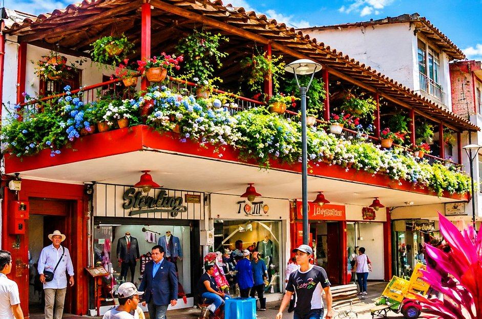
Hacienda Junín
A traditional Antioquian house filled with grandma's antiques, waiters dressed as farmers and string music at night. Not that hungry? Order the small bandeja.
Cra. 49 (Junín) #52-98, 2nd floor
Google Maps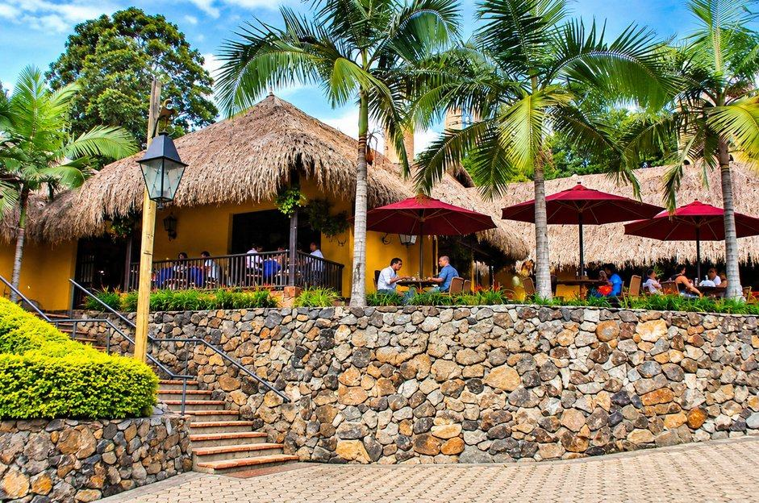
Hatoviejo
A classic recommended by Fodor's Travel. It offers a family-size bandeja to share with a group.
Las Palmas: Calle 16 #28-60, across from Hotel Intercontinental
Google Maps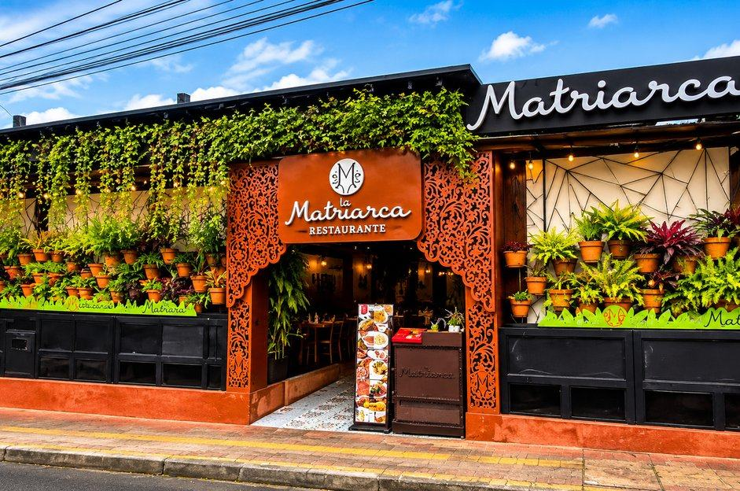
La Matriarca
Comfortable and well located for visitors, with a good traditional bandeja.
Google Maps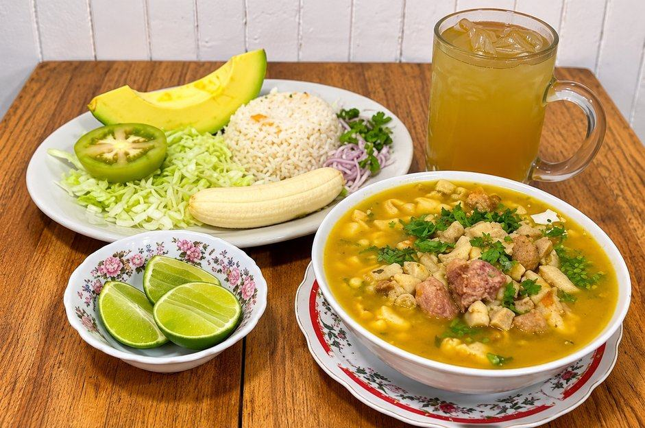
Mondongo's
Famous for its mondongo (tripe soup), but its "Típica Antioqueña" bandeja is a local favorite.
Google Maps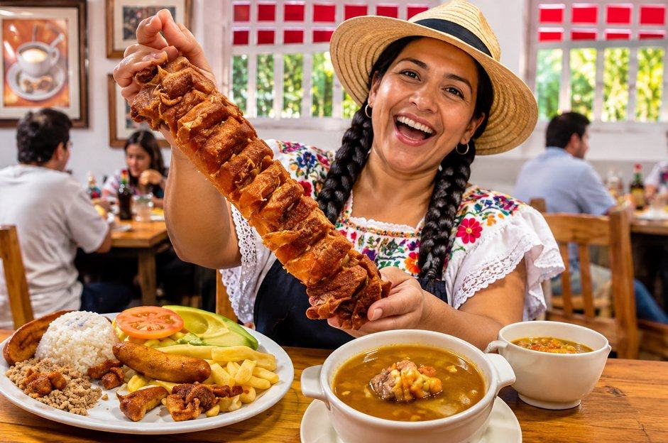
La Gloria de Gloria
A giant chicharrón the size of a forearm. There's always a line: arrive before 11:30 a.m.
Calle 37 Sur #35-06, Envigado
Google Maps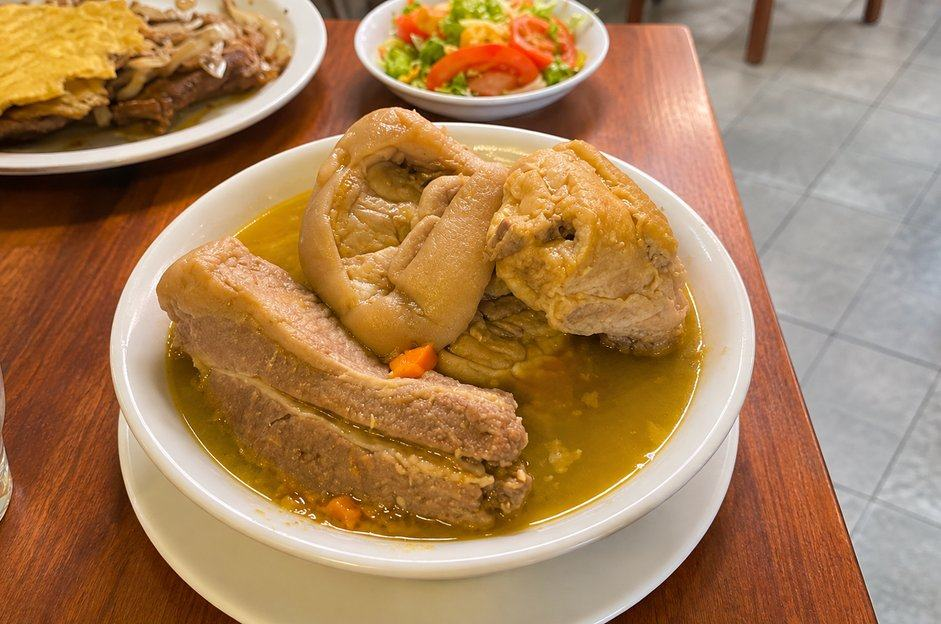
El Trifásico
Where presidents, celebrities and everyday folks go when they're craving a good bandeja.
Google Maps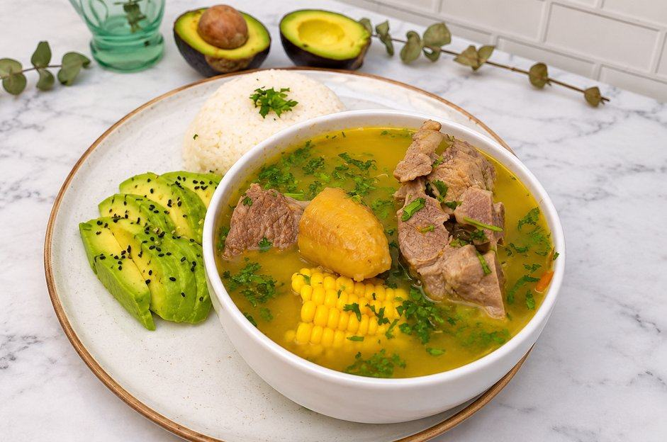
Sancho Paisa
Over 25 years of traditional food. Featured by Condé Nast Traveler in 2026. Perfect when arriving in or leaving Medellín.
Google MapsThe stacked bandeja
To share in the middle of the table… and for the photo!
Leonor · 3-tier bandeja paisa
A traditional restaurant with true Antioquian flavor. Its 3-tier bandeja is the star of social media.
Calle 23 Sur #42B-11, Envigado
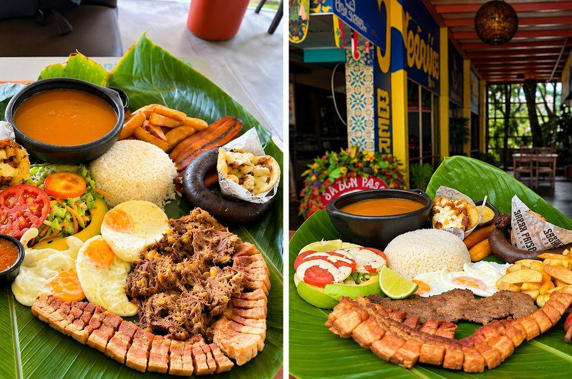
Sazón Paisa Rooftop · The "Mega Paisa Reforzada"
Called the biggest bandeja paisa in Medellín: served on a banana leaf, made to share. Open 24 hours.
Cra. 47A #5-85, El Poblado (Av. Las Vegas)
Paisa tips
It's a lunch dish, not dinner: order it at midday.
Sunday is the day for traditional food with the family.
Pair it with a refajo (beer + soda) or a panela lemonade.
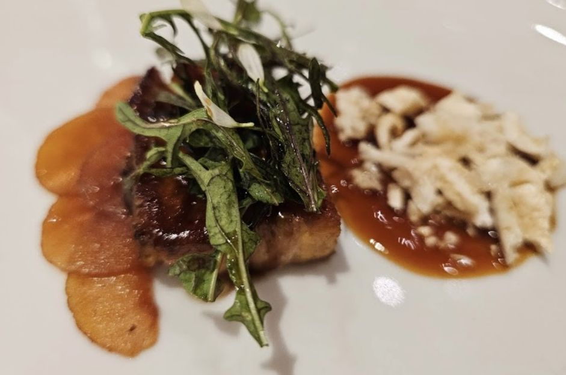
Fine dining: Elcielo
The restaurant of chef Juan Manuel “Juanma” Barrientos, one of the best known in Colombia. It’s a multi-sense tasting experience built on Colombian ingredients. The brand has Michelin stars in Washington D.C. and Miami, and the Elcielo Hotel in Medellín received a Michelin Key.
Calle 7D #43C-36, El Poblado. There is the full tasting experience and a shorter lunch menu. Reservations required.
Comida típica
Los sabores antioqueños que no pueden faltar en su viaje, y dónde comerlos.
¿Qué lleva la bandeja paisa?
Frijoles rojos, arroz blanco, carne molida, chicharrón, chorizo, morcilla, huevo frito, tajada de plátano maduro, arepa, aguacate y hogao. ¡Todo en un solo plato!
Nació del almuerzo de los arrieros, que necesitaban energía para caminar todo el día por las montañas. Por eso es tan abundante.
Dónde comer la mejor
Hacienda Junín
Casa antioqueña con objetos de las abuelas, meseros vestidos de campesinos y música de cuerda en las noches. Si no tiene mucha hambre, pida la bandeja pequeña.
Cra. 49 (Junín) #52-98, 2.º piso
Google MapsHatoviejo
Un clásico recomendado por la guía Fodor's. Tiene bandeja familiar para compartir en grupo.
Las Palmas: Calle 16 #28-60, frente al Hotel Intercontinental
Google MapsLa Matriarca
Cómodo y bien ubicado para el turista, con buena bandeja tradicional.
Google MapsMondongo's
Famoso por su sopa de mondongo, pero su bandeja "Típica Antioqueña" es de las favoritas de los paisas.
Google MapsLa Gloria de Gloria
Chicharrón gigante del tamaño de un antebrazo. Siempre hay fila: llegue antes de las 11:30 a. m.
Calle 37 Sur #35-06, Envigado
Google MapsEl Trifásico
A donde van presidentes, famosos y gente del común cuando se antojan de una buena bandeja.
Google MapsSancho Paisa
Más de 25 años de cocina típica. Condé Nast Traveler lo destacó en 2026. Ideal al llegar o al salir de Medellín.
Google MapsLa bandeja de pisos
Para compartir en el centro de la mesa… ¡y para la foto!
Leonor · Bandeja paisa de 3 pisos
Restaurante de comida típica con sazón antioqueña de verdad. Su bandeja de 3 pisos es la estrella de las redes.
Calle 23 Sur #42B-11, Envigado
Sazón Paisa Rooftop · La "Mega Paisa Reforzada"
Llamada la bandeja paisa más grande de Medellín: servida sobre hoja de plátano, alcanza para compartir. Abierto las 24 horas.
Cra. 47A #5-85, El Poblado (Av. Las Vegas)
Consejos paisas
Es un almuerzo, no una cena: pídala al mediodía.
El domingo es el día de la comida típica en familia.
Acompáñela con un refajo o una limonada de panela.
Alta cocina: Elcielo
El restaurante del chef Juan Manuel “Juanma” Barrientos, uno de los más reconocidos de Colombia. Es una experiencia de degustación para todos los sentidos con ingredientes colombianos. La marca tiene estrellas Michelin en Washington D. C. y Miami, y el Hotel Elcielo de Medellín recibió una Llave Michelin.
Calle 7D #43C-36, El Poblado. Está la experiencia completa de degustación y un menú de almuerzo más corto. Hay que reservar.
The best viewpoints
Los mejores miradores
Medellín is a valley between mountains: every hill is a balcony over the city. Here are the 13 best, from the most famous to the hidden gems.
Medellín es un valle entre montañas: cada cerro es un balcón sobre la ciudad. Aquí están los 13 mejores, del más famoso a las joyas escondidas.
What to do: A restaurant-viewpoint in the middle of three hectares of forest, with views over the whole Aburrá Valley. Mediterranean and Colombian cooking, kiosks among the trees and Medellín's first Wine Garden. Rated 4.6 on Google by almost 2,500 people.
Qué hacer: Un restaurante mirador en medio de tres hectáreas de bosque, con vista a todo el Valle de Aburrá. Cocina mediterránea y colombiana, kioscos entre los árboles y el primer Wine Garden de Medellín. Tiene 4.6 en Google con cerca de 2.500 opiniones.
Hours: Mon–Tue 5 p.m.–12 a.m. · Wed–Fri 12 p.m.–12 a.m. · Sat 10 a.m.–12 a.m. · Sun 10 a.m.–11 p.m.
Horario: Lun–mar 5 p. m.–12 a. m. · Mié–vie 12 m.–12 a. m. · Sáb 10 a. m.–12 a. m. · Dom 10 a. m.–11 p. m.
Tips: Go at sunset and book ahead (+57 310 540 8571). Seating is outdoors: bring a jacket. Get there by taxi or app.
Recomendaciones: Vaya al atardecer y reserve antes (+57 310 540 8571). Las mesas son al aire libre: lleve chaqueta. Llegue en taxi o por aplicación.
Getting there: By taxi or app (Uber, DiDi) up the Las Palmas road toward Santa Elena.
Cómo llegar: En taxi o aplicación (Uber, DiDi), subiendo por Las Palmas hacia Santa Elena.
What to bring: A jacket or sweater: you sit outdoors among the trees and it gets cool after sunset.
Qué llevar: Chaqueta o saco: las mesas son al aire libre entre los árboles y al caer la tarde refresca.
See Google reviews & mapVer reseñas y mapa en GoogleWhat to do: Fine dining with a panoramic view of the city, in one of the best spots on Las Palmas. Contemporary Latin cuisine made with local ingredients. Diners rate it 4.5–4.6 on OpenTable.
Qué hacer: Alta cocina con vista panorámica de la ciudad, en uno de los mejores puntos de Las Palmas. Cocina latina contemporánea con productos locales. Los comensales le dan 4.5–4.6 en OpenTable.
Hours: Lunch and dinner. Check today's hours on Google before you go.
Horario: Almuerzo y cena. Confirme el horario del día en Google antes de ir.
Tips: Book ahead on OpenTable or call +57 324 556 1617. Ask for a table by the railing at sunset. Upscale ($$$): dress smart casual.
Recomendaciones: Reserve en OpenTable o al +57 324 556 1617. Pida mesa junto a la baranda al atardecer. Es de precio alto ($$$): vaya bien arreglado.
Getting there: By taxi or app up Avenida Las Palmas.
Cómo llegar: En taxi o aplicación, por la Avenida Las Palmas.
What to bring: Smart-casual clothes and a light jacket for the terrace at night.
Qué llevar: Ropa elegante-casual y una chaqueta liviana para la terraza de noche.
See Google reviews & mapVer reseñas y mapa en GoogleWhat to do: Walk through a replica of a traditional Antioquian village: church, plaza, fountain and colorful balconies. Enjoy one of the most central views of the city and try a buñuelo.
Qué hacer: Recorra la réplica de un pueblo antioqueño tradicional: iglesia, plaza, fuente y balcones de colores. Disfrute una de las vistas más centrales de la ciudad y pruebe un buñuelo.
Hours: Park: 5 a.m. to midnight. Shops and restaurants: 10 a.m. to 8 p.m.
Horario: Parque: 5 a. m. a 12 de la noche. Tiendas y restaurantes: 10 a. m. a 8 p. m.
Tips: Take a taxi (the walk up from the Metro is long and steep). Part of the main viewpoint area has been under renovation in 2026: check before you go.
Recomendaciones: Suba en taxi (caminando desde el Metro es largo y empinado). En 2026 parte de la zona principal de miradores ha estado en obras: confirme antes de ir.
What to bring: Comfortable shoes, a cap and sunscreen if you go during the day.
Qué llevar: Zapatos cómodos, gorra y bloqueador si va de día.
Google MapsWhat to do: Climb one of Medellín's seven guardian hills, crowned by a large statue of Christ, with a panoramic view of downtown and the east of the city. There are fruit and snack stands.
Qué hacer: Suba uno de los siete cerros tutelares de Medellín, coronado por un gran Cristo, con vista panorámica del centro y el oriente de la ciudad. Hay puestos de frutas y comidas rápidas.
Hours: Open-air hill. Best in the afternoon and at sunset.
Horario: Cerro al aire libre. Lo mejor: en la tarde y al atardecer.
Tips: Go with a guide or in a group, and come down before it gets dark. Comfortable shoes.
Recomendaciones: Vaya con guía o en grupo, y baje antes de que oscurezca. Zapatos cómodos.
Getting there: With a guide or by taxi to the top; ask at your hotel for the safest route.
Cómo llegar: Con guía o en taxi hasta arriba; pregunte en su hotel por la ruta más segura.
What to bring: Sneakers, water, sunscreen and little cash. Leave jewelry and expensive items at the hotel.
Qué llevar: Tenis, agua, bloqueador y poco efectivo. Deje joyas y cosas de valor en el hotel.
Google MapsWhat to do: Famous for its sunsets above the clouds and for paragliding: fly over the valley with an instructor. Restaurants, campfires and hot chocolate with cheese.
Qué hacer: Famoso por sus atardeceres sobre las nubes y por el parapente: vuele sobre el valle con un instructor. Restaurantes, fogatas y chocolate con queso.
Hours: Restaurants open into the night; paragliding during the day, depending on the weather.
Horario: Restaurantes abiertos hasta la noche; el parapente es de día, según el clima.
Tips: About 1 hour from El Poblado: go by car or taxi. Book the paragliding in advance and bring a jacket.
Recomendaciones: A cerca de 1 hora de El Poblado: vaya en carro o en taxi. Reserve el parapente con anticipación y lleve chaqueta.
Try the panchocha: a big bread filled with three melted cheeses, born in San Félix. The Panchocha bakery, at km 5 on the road to San Pedro de los Milagros, also has a view and hot chocolate.
Pruebe la panchocha: un pan grande relleno de tres quesos derretidos, nacido en San Félix. La panadería Panchocha, en el km 5 de la vía a San Pedro de los Milagros, también tiene vista y chocolate caliente.
Paragliding: tandem flights last about 15 minutes. Prices vary by operator: compare and choose one with good recent reviews.
Parapente: los vuelos en tándem duran unos 15 minutos. Los precios varían según el operador: compare y escoja uno con buenas reseñas recientes.
What to bring: A warm jacket, long pants and closed shoes (required for paragliding). It gets cold at sunset.
Qué llevar: Chaqueta abrigada, pantalón largo y zapatos cerrados (obligatorios para el parapente). Al atardecer hace frío.
Google MapsWhat to do: A restaurant-bar high in the hills, with a lit entrance and a giant sunflower. Enjoy a picada, cocktails and live music while you look at El Poblado and the whole valley at night.
Qué hacer: Restaurante-bar en lo alto de las lomas, con entrada llena de luces y un girasol gigante. Disfrute una picada, cócteles y música mientras ve El Poblado y todo el valle de noche.
Hours: Afternoon and night (around 4 p.m. to 1 a.m.; Sundays from 1 p.m.). Confirm before going.
Horario: Tarde y noche (más o menos de 4 p. m. a 1 a. m.; domingos desde la 1 p. m.). Confirme antes de ir.
Tips: Go by taxi from Sabaneta Metro station. It's roofed, so it works even if it rains. Bring some cash just in case.
Recomendaciones: Vaya en taxi desde la estación Sabaneta del Metro. Es techado, así que sirve aunque llueva. Lleve algo de efectivo por si acaso.
What to bring: A light jacket and some cash.
Qué llevar: Chaqueta liviana y algo de efectivo.
Google MapsWhat to do: A family viewpoint with food, photo spots, a small farm with animals and activities like paintball. Great for going with children or grandchildren.
Qué hacer: Un mirador familiar con comida, lugares para fotos, una granja con animales y actividades como paintball. Ideal para ir con hijos o nietos.
Hours: Afternoon and evening. Confirm hours before going.
Horario: Tarde y noche. Confirme el horario antes de ir.
Tips: About 5 minutes from the Éxito store on Loma de los Bernal. Go by taxi or app.
Recomendaciones: A unos 5 minutos del Éxito de la Loma de los Bernal. Vaya en taxi o por aplicación.
What to bring: Comfortable clothes for the kids’ activities and a light jacket for the evening.
Qué llevar: Ropa cómoda para las actividades de los niños y chaqueta liviana para la noche.
Google MapsWhat to do: Hike one of the largest urban nature parks in the city, with a 360° view at the top. Perfect for a picnic.
Qué hacer: Caminata por uno de los parques naturales urbanos más grandes de la ciudad, con vista de 360° en la cima. Perfecto para un picnic.
Hours: Daytime; best early in the morning.
Horario: De día; mejor temprano en la mañana.
Tips: Entrance about 10 minutes from Estadio Metro station. Stay on the main paths, where police patrol. Bring water.
Recomendaciones: La entrada queda a unos 10 minutos de la estación Estadio del Metro. Ande por los senderos principales, donde patrulla la policía. Lleve agua.
What to bring: Sneakers, water, a cap and sunscreen. Go early to avoid the midday heat.
Qué llevar: Tenis, agua, gorra y bloqueador. Vaya temprano para evitar el calor del mediodía.
Google MapsWhat to do: Fly over the hillside neighborhoods in the Metrocable cabins, see the view from Santo Domingo, and continue to Parque Arví, a huge forest reserve with trails and a farmers' market.
Qué hacer: Vuele sobre los barrios de ladera en las cabinas del Metrocable, vea la vista desde Santo Domingo y siga hasta el Parque Arví, una gran reserva de bosque con senderos y mercado campesino.
Hours: During Metro hours. Arví is best visited in the morning. Confirm the schedule of the line to Arví.
Horario: En horario del Metro. A Arví es mejor ir en la mañana. Confirme el horario de la línea a Arví.
Tips: Metro Line A to Acevedo, then Metrocable Line K (about 10 min). Go in a group and avoid the area at night. Bring a jacket for Arví.
Recomendaciones: Metro línea A hasta Acevedo y Metrocable línea K (unos 10 min). Vaya acompañado y evite la zona de noche. Lleve chaqueta para Arví.
What to bring: A jacket, a light raincoat, sneakers and cash for the farmers’ market.
Qué llevar: Chaqueta, impermeable liviano, tenis y efectivo para el mercado campesino.
Google MapsWhat to do: A steep, sporty hike up one of the seven guardian hills, crowned by three crosses. Locals go up to exercise; the reward is a great view.
Qué hacer: Una caminata empinada y deportiva a uno de los siete cerros tutelares, coronado por tres cruces. Los paisas suben a hacer ejercicio; el premio es una gran vista.
Hours: Daytime. Allow about 2 hours round trip (30–45 min up).
Horario: De día. Calcule unas 2 horas ida y vuelta (30 a 45 min de subida).
Tips: Only for people in good shape. Go early, with water and someone else.
Recomendaciones: Solo para quien esté en buen estado físico. Vaya temprano, con agua y acompañado.
Getting there: By taxi or app to the start of the trail in Belén.
Cómo llegar: En taxi o aplicación hasta el inicio del sendero en Belén.
What to bring: Workout clothes, sneakers with good grip, water, a cap and sunscreen.
Qué llevar: Ropa deportiva, tenis con buen agarre, agua, gorra y bloqueador.
Google MapsWhat to do: A hill-park with trails among trees and environmental education spaces. Locals love it for the sunset over the city.
Qué hacer: Un cerro-parque con senderos entre árboles y espacios de educación ambiental. Los paisas lo aman para ver el atardecer sobre la ciudad.
Hours: Daytime; best at sunset.
Horario: De día; lo mejor: al atardecer.
Tips: Go by taxi or app, and leave when the light starts to fade.
Recomendaciones: Vaya en taxi o por aplicación, y salga cuando empiece a oscurecer.
What to bring: Sneakers and a light jacket for sunset.
Qué llevar: Tenis y chaqueta liviana para el atardecer.
Google MapsWhat to do: The highest of all: on a clear day you can see a large part of Antioquia. Combine it with a visit to a silletero farm in Santa Elena.
Qué hacer: El más alto de todos: en un día despejado se ve buena parte de Antioquia. Combínelo con la visita a una finca silletera en Santa Elena.
Hours: Daytime, on clear days. Free admission.
Horario: De día, en días despejados. Entrada gratis.
Tips: It's cold up there: bring a jacket. Best by car or taxi.
Recomendaciones: Allá arriba hace frío: lleve chaqueta. Mejor en carro o en taxi.
Getting there: By car or taxi toward Santa Elena.
Cómo llegar: En carro o en taxi, hacia Santa Elena.
What to bring: A warm jacket or ruana, long pants and closed shoes: it’s one of the coldest spots near Medellín.
Qué llevar: Chaqueta abrigada o ruana, pantalón largo y zapatos cerrados: es de los puntos más fríos cerca de Medellín.
Google MapsWhat to do: The locals’ classic, free viewpoint. There are two along the road (the second one has the better view). The tradition is to buy a hot chocolate with cheese at the stands and watch the city lights.
Qué hacer: El mirador clásico y gratis de los paisas. Hay dos sobre la vía (el segundo tiene mejor vista). La tradición es comprar un chocolate con queso en los puestos y ver las luces de la ciudad.
Tips: Best at sunset and at night. Go by taxi or app (taxis often wait there for the trip back) and stay where there are people.
Recomendaciones: Lo mejor es al atardecer y de noche. Vaya en taxi o por aplicación (allí suelen esperar taxis para el regreso) y quédese donde haya gente.
What to bring: A jacket and some cash for the stands.
Qué llevar: Chaqueta y algo de efectivo para los puestos.
Google MapsComuna 13
From one of the most dangerous neighborhoods to the most visited place in the city.
A story of transformation
For years Comuna 13 lived through violence and isolation. Its people transformed it with art, music and community projects. Today its walls are covered with graffiti that tells its story, and in 2026 National Geographic gave it a special mention.
The outdoor escalators
They replaced about 350 concrete steps that residents had to climb every day. Today they are a symbol of the city's transformation, and around 15,000 visitors come every day.
The Graffitour
A walk of about 2½ to 3 hours among graffiti, viewpoints, hip-hop and street dance shows. The best way to do it is with a local guide born in the neighborhood: they tell their own family's story.
How to get there
By Metro to San Javier station (line B), then a short bus or taxi ride up. By Uber or taxi, just say: "a las escaleras eléctricas de la Comuna 13".
Tips
Go in the morning: fewer crowds and less heat.
Comfortable shoes: it's all hills and stairs.
Buy from local artisans and try the famous mango ice pops.
Ask before photographing people.
The escalators had maintenance in 2025–2026; if one is closed, the regular stairs next to it remain open.
Comuna 13
De uno de los barrios más peligrosos al lugar más visitado de la ciudad.
Una historia de transformación
Durante años la Comuna 13 vivió violencia y aislamiento. Su gente la transformó con arte, música y proyectos comunitarios. Hoy sus paredes están llenas de grafitis que cuentan su historia, y en 2026 National Geographic le dio una mención especial.
Las escaleras eléctricas
Reemplazaron unos 350 escalones de concreto que los vecinos tenían que subir todos los días. Hoy son un símbolo de la transformación de la ciudad, y la visitan unas 15.000 personas al día.
El Graffitour
Un recorrido de 2 horas y media a 3 horas entre grafitis, miradores, hip-hop y shows de baile en la calle. Lo mejor es hacerlo con un guía local nacido en el barrio: le cuenta la historia de su propia familia.
Cómo llegar
En Metro hasta la estación San Javier (línea B) y de ahí un bus o taxi corto hacia arriba. En Uber o taxi diga: "a las escaleras eléctricas de la Comuna 13".
Consejos
Vaya en la mañana: menos gente y menos calor.
Zapatos cómodos: todo es loma y escaleras.
Compre a los artesanos del barrio y pruebe las famosas paletas de mango.
Pida permiso antes de tomarle fotos a la gente.
Las escaleras tuvieron mantenimiento en 2025–2026; si alguna está cerrada, las escaleras normales de al lado siguen abiertas.
Quick guide
Ficha rápida
Distance: about 30–40 min from El Poblado by Metro + bus, taxi or Uber.
Distancia: unos 30–40 min desde El Poblado en Metro + bus, taxi o Uber.
Time: half a day (the tour takes 2½–3 h).
Tiempo: medio día (el recorrido dura de 2½ a 3 h).
Weather: warm and sunny at midday.
Clima: caliente y con sol al mediodía.
What to bring: sneakers, a cap, sunscreen, water and small bills for tips, ice pops and art.
Qué llevar: tenis, gorra, bloqueador, agua y billetes pequeños para propinas, paletas y arte.
Guatapé and El Peñol
The most famous day trip from Medellín, about 2 hours away.
The Rock of El Peñol
A granite giant about 220 m high rising from the edge of a huge reservoir full of islands. Climb its 740 steps for a 360° view you'll never forget.
Admission is cash only. The climb takes 15–30 minutes, with rests.
The town of Guatapé
Known as the "town of zócalos": the bottom of every house is decorated with colorful hand-painted reliefs that tell stories of its families and trades. Stroll the Plazoleta de los Zócalos and the lakeside promenade.
The reservoir
Take a boat ride around the islands, or simply enjoy lunch by the water.
Tips
Leave Medellín early (around 8 a.m.) to climb before the crowds.
Bring cash for the rock and the boat.
Got time? Spend the night: at sunrise you'll have the rock almost to yourself.
Guatapé y El Peñol
El paseo de un día más famoso desde Medellín, a unas 2 horas.
La Piedra del Peñol
Un gigante de granito de unos 220 metros de alto que se levanta a la orilla de un inmenso embalse lleno de islas. Suba sus 740 escalones para una vista de 360° que nunca va a olvidar.
La entrada se paga solo en efectivo. La subida toma entre 15 y 30 minutos, con descansos.
El pueblo de Guatapé
Conocido como "el pueblo de los zócalos": la parte de abajo de cada casa está decorada con relieves de colores pintados a mano que cuentan la historia de sus familias y oficios. Recorra la Plazoleta de los Zócalos y el malecón.
El embalse
Dé un paseo en lancha entre las islas, o simplemente almuerce a la orilla del agua.
Consejos
Salga temprano de Medellín (tipo 8 a. m.) para subir antes de las multitudes.
Lleve efectivo para la piedra y la lancha.
¿Tiene tiempo? Quédese a dormir: al amanecer tiene la piedra casi para usted solo.
Quick guide
Ficha rápida
Getting there: bus from the Terminal del Norte (about 2 h) or by car.
Cómo llegar: bus desde la Terminal del Norte (unas 2 h) o en carro.
Time: a full day, or stay one night.
Tiempo: un día completo, o quédese una noche.
Weather: a bit cooler than Medellín, especially at night.
Clima: un poco más frío que Medellín, sobre todo de noche.
What to bring: sneakers for the 740 steps, water, sunscreen, a cap, a light jacket and cash.
Qué llevar: tenis para los 740 escalones, agua, bloqueador, gorra, chaqueta liviana y efectivo.
Cisneros, Antioquia
The railway town of rivers and natural pools, about 1 hour and 20 minutes from Medellín.
El pueblito ferroviario de ríos y charcos, a 1 hora y 20 minutos de Medellín.
"The Golden Gate of the Northeast"
That's what they call Cisneros, also known as "La Reina del Nus" (Queen of the Nus River). It was born with the Antioquia Railway, and it carries the name of the Cuban engineer Francisco Javier Cisneros, who drove the railway forward.
In its main park rests Locomotive 45, the first to cross the La Quiebra Tunnel with passengers.
"La Puerta de Oro del Nordeste"
Así le dicen a Cisneros, también conocido como "La Reina del Nus". Nació con el Ferrocarril de Antioquia y lleva el nombre del ingeniero cubano Francisco Javier Cisneros, quien impulsó el tren.
En su parque principal descansa la Locomotora 45, la primera en cruzar con pasajeros el Túnel de La Quiebra.
The La Quiebra Tunnel
Opened in 1929 and 3,742 meters long, it is considered Colombia's first great railway tunnel and connected Medellín with the Magdalena River. Today you can cross it on a "motorrodillo", a small motorized rail cart: an unforgettable adventure!
El Túnel de La Quiebra
Inaugurado en 1929 y con 3.742 metros de largo, es considerado el primer gran túnel ferroviario de Colombia y conectó a Medellín con el río Magdalena. Hoy se puede atravesar en "motorrodillo", un carrito motorizado sobre los rieles: ¡una aventura inolvidable!
A day of natural pools with friends
Crystal-clear water, green mountains and the best company.
What awaits you
The Nus River pools: natural swimming holes with crystal-clear water, perfect for a dip.
El Caney Waterfall: an impressive waterfall about 100 m high on the Santa Gertrudis River.
For the adventurous: canyoning (rappelling down waterfalls) with local guides.
Plan for the day
- 6:30 a.m. Leave from Medellín's Terminal del Norte (bus, about 2 h) or by car.
- 8:30 a.m. Paisa breakfast in the main park and a photo with Locomotive 45.
- 9:30 a.m. Ride the motorrodillo through the La Quiebra Tunnel.
- 11:00 a.m. Off to the pools of the Nus River: swim, sunbathe and enjoy nature.
- 1:00 p.m. Lunch: sancocho, frijoles con garra or a "fiambre" wrapped in leaves by the river.
- 3:00 p.m. Walk to El Caney Waterfall with a local guide.
- 5:00 p.m. Head back to Medellín.
What to bring
Swimsuit, towel and a change of clothes · Sandals or water shoes · Sunscreen and insect repellent · Water · Cash · A bag for your trash.
Un día de charcos con amigos
Agua cristalina, montañas verdes y la mejor compañía.
Lo que le espera
Los charcos del río Nus: piscinas naturales de aguas cristalinas, perfectas para darse un chapuzón.
La Cascada El Caney: una impresionante caída de agua de unos 100 metros en el río Santa Gertrudis.
Para los aventureros: torrentismo (bajar cascadas en rappel) con guías locales.
Plan del día
- 6:30 a. m. Salida desde la Terminal del Norte de Medellín (bus, unas 2 h) o en carro.
- 8:30 a. m. Desayuno paisa en el parque principal y foto con la Locomotora 45.
- 9:30 a. m. Paseo en motorrodillo por el Túnel de La Quiebra.
- 11:00 a. m. ¡A los charcos del río Nus! Nadar, asolearse y disfrutar la naturaleza.
- 1:00 p. m. Almuerzo: sancocho, frijoles con garra o un fiambre envuelto en hoja a la orilla del río.
- 3:00 p. m. Caminata a la Cascada El Caney con guía local.
- 5:00 p. m. Regreso a Medellín.
Qué llevar
Vestido de baño, toalla y ropa de cambio · Chanclas o zapatos para el agua · Bloqueador y repelente · Agua · Efectivo · Una bolsa para su basura.
Quick guide
Ficha rápida
Getting there: bus from the Terminal del Norte (about 2 h) or by car.
Cómo llegar: bus desde la Terminal del Norte (unas 2 h) o en carro.
Time: a full day.
Tiempo: un día completo.
Weather: warmer than Medellín — perfect for the river.
Clima: más caliente que Medellín, perfecto para el río.
What to bring: swimsuit, towel, water shoes, sunscreen, a change of clothes and cash.
Qué llevar: vestido de baño, toalla, zapatos para el agua, bloqueador, ropa de cambio y efectivo.
Río Claro
A crystal-clear river running through a marble canyon in the middle of the jungle, about 3 hours from Medellín.
Un río de aguas cristalinas que corre por un cañón de mármol en plena selva, a unas 3 horas de Medellín.
What is it?
The Río Claro Canyon Nature Reserve (Reserva Natural Cañón del Río Claro) is a private reserve created in 1970 on the Medellín–Bogotá highway. Over millions of years, the river carved a canyon out of marble, with caves, stalactites and a tropical forest where trees grow right on the rocks.
The water is so clear you can see the white marble riverbed. It’s one of the most beautiful natural places in Antioquia.
What to do
Rafting: a gentle ride down the river between marble walls, about 2 hours. From age 7.
Caverna de los Guácharos: a real caving tour through a marble cave where the guácharos (oilbirds) live. You walk, climb a little and swim inside the cave with a helmet and life vest. Tour operators usually accept it from age 12, and you need to be in good shape.
Canopy (zipline) over the canyon. From age 6.
Hydro-hiking, short trails, birdwatching and swimming at the marble "beaches" of the river.
Book the activities in advance, especially on weekends and holidays.
Activities and payment
At the reserve you can go rafting, explore the cave and ride the canopy. Each activity is paid separately, per person. Bring cash.
What visitors say
"Paradise on earth": the clear water and the marble canyon are what people love most.
The guides get great reviews, and the cave is everyone’s favorite: "scary and fun". You’ll see harmless whip spiders and hear the guácharos.
Go with time and, if you can, in low season: it’s calmer and you enjoy it more. Many recommend staying one night.
What to bring
Swimsuit, towel and a full change of clothes · Water shoes or sneakers with good grip (no flip-flops in the cave) · Light, quick-dry clothes · A flashlight · Sunscreen, insect repellent and a cap · A waterproof bag for your phone · Cash.
Not allowed: alcohol, campfires or loud music.
¿Qué es?
La Reserva Natural Cañón del Río Claro es una reserva privada creada en 1970 sobre la autopista Medellín–Bogotá. Durante millones de años, el río talló un cañón en mármol, con cavernas, estalactitas y un bosque tropical donde los árboles crecen sobre las rocas.
El agua es tan clara que se ve el fondo de mármol blanco. Es uno de los lugares naturales más bonitos de Antioquia.
Qué hacer
Rafting: un descenso tranquilo por el río entre paredes de mármol, de unas 2 horas. Desde los 7 años.
Caverna de los Guácharos: un recorrido de espeleología de verdad por una cueva de mármol donde viven los guácharos. Se camina, se trepa un poco y se nada dentro de la cueva, con casco y chaleco. Los operadores suelen aceptarlo desde los 12 años, y hay que estar en buena forma.
Canopy sobre el cañón. Desde los 6 años.
Hidrosenderismo, caminatas cortas, avistamiento de aves y baño en las "playas" de mármol del río.
Reserve las actividades con anticipación, sobre todo en fines de semana y festivos.
Actividades y pago
En la reserva puede hacer rafting, entrar a la caverna y montar en el canopy. Cada actividad se paga aparte, por persona. Lleve efectivo.
Lo que dice la gente
"Es el paraíso en la tierra": el agua cristalina y el cañón de mármol es lo que más enamora.
Los guías tienen muy buenas reseñas, y la caverna es la favorita de todos: "da miedo y es divertidísima". Verá arañas látigo, que no hacen daño, y oirá a los guácharos.
Vaya con tiempo y, si puede, en temporada baja: está más tranquilo y se disfruta más. Muchos recomiendan quedarse una noche.
Qué llevar
Vestido de baño, toalla y una muda completa de ropa · Zapatos para el agua o tenis que agarren bien (nada de chanclas en la caverna) · Ropa liviana que seque rápido · Linterna · Bloqueador, repelente y gorra · Bolsa impermeable para el celular · Efectivo.
No se permite: licor, fogatas ni música a alto volumen.
Quick guide
Ficha rápida
Getting there: km 152 of the Medellín–Bogotá highway, about 3 h. By car, on a tour, or on any bus going toward Bogotá (ask to be dropped at the reserve).
Cómo llegar: km 152 de la autopista Medellín–Bogotá, unas 3 h. En carro, en tour, o en cualquier bus que vaya hacia Bogotá (pida que lo dejen en la reserva).
Time: a very long day trip (leave around 5–6 a.m.), or better, stay 1 night.
Tiempo: un día muy largo (salga a eso de las 5 o 6 a. m.), o mejor, quédese 1 noche.
Weather: hot and humid, much warmer than Medellín.
Clima: caliente y húmedo, mucho más que Medellín.
Where to sleep: inside the reserve there are lodges such as El Refugio; book in advance.
Dónde dormir: dentro de la reserva hay hospedajes como El Refugio; reserve con anticipación.
Reserve: +57 311 354 0119
Reserva: 311 354 0119
Hacienda Nápoles
One of Colombia’s biggest theme parks: rescued animals, hippos, dinosaurs and water parks, about 4 hours from Medellín.
Uno de los parques temáticos más grandes de Colombia: animales rescatados, hipopótamos, dinosaurios y parques acuáticos, a unas 4 horas de Medellín.
What is it?
It’s in Doradal (Puerto Triunfo), in the hot Magdalena Medio region. It was once the estate of drug lord Pablo Escobar; after it was abandoned, it was turned into a theme park, and today it’s all about wildlife and family fun.
Its symbol is the hippos. In the wildlife sanctuaries there are more than 400 species of animals, most of them rescued.
What’s inside
Wildlife sanctuaries: African savanna, hippo lake, birds, reptiles and a butterfly house, across more than 1,000 hectares of forest and lakes.
Aventura Jurásica: life-size moving dinosaurs and prehistoric trails.
Water parks: Aventura Acuática, Octopus and Mundo de Pangea, with slides, rapids and pools.
Parque Congo: more than 20 rides, including what the park calls the tallest drop tower in Colombia.
Museums about African cultures.
Passes
Básico — 1 day: wildlife sanctuaries, Jurassic Adventure and museums. No water parks.
Safari — 1 day: everything in Básico + Octopus and the Aventura Acuática water park.
Premium — 3 days in a row: everything, including Mundo de Pangea and Parque Congo.
For a day trip, Básico or Safari is enough. Go-karts, the arcade and bumper boats are paid separately.
Check prices and passes on the official site before you go.
Opening hours
Ticket office opens at 8:00 a.m. and the park at 8:30 a.m., until 5:00 p.m.
High season: every day. Low season: Wednesday to Sunday and holiday Mondays. Closed on regular Mondays and Tuesdays.
What to bring
Swimsuit and towel (for the water parks) · Very comfortable shoes: the park is huge · Cap, sunscreen and insect repellent · Water · Light clothes: it’s hot.
¿Qué es?
Queda en Doradal (Puerto Triunfo), en el Magdalena Medio, de clima caliente. Fue la finca del narcotraficante Pablo Escobar; después de quedar abandonada se convirtió en parque temático, y hoy todo gira alrededor de los animales y la diversión en familia.
Su símbolo son los hipopótamos. En los santuarios de fauna hay más de 400 especies de animales, la mayoría rescatados.
Qué hay adentro
Santuarios de fauna: sabana africana, lago de los hipopótamos, aves, reptiles y mariposario, en más de 1.000 hectáreas de bosques y lagos.
Aventura Jurásica: dinosaurios de tamaño real que se mueven y senderos prehistóricos.
Parques acuáticos: Aventura Acuática, Octopus y Mundo de Pangea, con toboganes, rápidos y piscinas.
Parque Congo: más de 20 atracciones, incluida la que el parque llama la torre de caída más alta de Colombia.
Museos sobre culturas africanas.
Pasaportes
Básico — 1 día: santuarios de fauna, Aventura Jurásica y museos. Sin parques acuáticos.
Safari — 1 día: todo lo del Básico + Octopus y el parque Aventura Acuática.
Premium — 3 días seguidos: todo, incluidos Mundo de Pangea y Parque Congo.
Para ir y volver el mismo día, alcanza con el Básico o el Safari. Los karts, el arcade y los botes chocones se pagan aparte.
Consulte precios y pasaportes en la página oficial antes de ir.
Horarios
La taquilla abre a las 8:00 a. m. y el parque a las 8:30 a. m., hasta las 5:00 p. m.
Temporada alta: todos los días. Temporada baja: de miércoles a domingo y lunes festivos. Cerrado los lunes que no son festivos y los martes.
Qué llevar
Vestido de baño y toalla (para los parques acuáticos) · Zapatos muy cómodos: el parque es enorme · Gorra, bloqueador y repelente · Agua · Ropa fresca: hace calor.
Quick guide
Ficha rápida
Getting there: km 165 of the Medellín–Bogotá highway, in Doradal, about 3½–4 h. By car, on a tour or by bus toward Doradal.
Cómo llegar: km 165 de la autopista Medellín–Bogotá, en Doradal, unas 3 h y media a 4 h. En carro, en tour o en bus hacia Doradal.
Time: a day trip means leaving around 5 a.m. and coming back at night. Better: stay 1 or 2 nights.
Tiempo: ir y volver el mismo día es salir a eso de las 5 a. m. y regresar de noche. Mejor: quédese 1 o 2 noches.
Where to sleep: the park has its own hotels (África, Casablanca, Lago Azul and others); staying there can give you benefits on the Premium and Safari passes.
Dónde dormir: el parque tiene sus propios hoteles (África, Casablanca, Lago Azul y otros); hospedarse ahí puede darle beneficios en los pasaportes Premium y Safari.
Official WhatsApp: +57 313 628 6931
WhatsApp oficial: 313 628 6931
Travel with peace of mind
Viaje con tranquilidad
We have a trusted transportation system in Medellín and all of Antioquia, so you never have to worry about how to get around.
Tenemos un sistema de transporte de confianza en Medellín y toda Antioquia, para que usted nunca se preocupe por cómo moverse.
No matter how many of you travel
As a couple, with the whole family or with a big group: there is always a trusted person waiting for you, and we always have the right vehicle for the number of people traveling.
What we can coordinate for you
Airport pickup: someone waiting for you when you land, who takes you straight to your hotel.
Private rides around Medellín and the metropolitan area.
Custom tours of the city: Comuna 13, downtown, Pueblito Paisa and more.
Full-day trips: Guatapé, Santa Fe de Antioquia, Jardín, Río Claro, Hacienda Nápoles and Santa Elena.
Rides for food, cultural, family or business plans.
Why travel with us
Personal attention · Punctuality and comfort · Safe trips with trusted people · Medellín and Antioquia.
No importa cuántos viajen
En pareja, con toda la familia o con un grupo grande: siempre hay una persona de confianza esperándolo, y siempre tenemos el vehículo que corresponde a la cantidad de personas que viajan.
Lo que le coordinamos
Recogida en el aeropuerto: alguien esperándolo cuando aterrice, que lo lleva directo a su hotel.
Traslados privados por Medellín y el área metropolitana.
Recorridos a su medida por la ciudad: Comuna 13, el centro, Pueblito Paisa y más.
Excursiones de día completo: Guatapé, Santa Fe de Antioquia, Jardín, Río Claro, Hacienda Nápoles y Santa Elena.
Traslados para planes gastronómicos, culturales, familiares o de negocios.
Por qué viajar con nosotros
Atención personalizada · Puntualidad y comodidad · Viajes seguros con gente de confianza · Medellín y Antioquia.
Our vehicles
Nuestros vehículos
How a night out works in Medellín
Así funciona una noche de rumba en Medellín
Provenza, Parque Lleras and Laureles explained: when to go out, where, and what music you'll find.
Provenza, Parque Lleras y Laureles explicados: a qué hora salir, adónde ir y qué música va a encontrar.
The first rule: Medellín goes out late
La primera regla: en Medellín se sale tarde
If you walk into a bar at 9 p.m. and it's half empty, don't worry: that's normal. Nights peak between midnight and 3 a.m. Once you adjust to the city's rhythm, you'll find one of the most varied and fun party scenes in South America.
Si llega a un bar a las 9 p. m. y lo encuentra medio vacío, no se preocupe: es normal. Las noches llegan a su mejor momento entre la medianoche y las 3 a. m. Cuando se acomode al ritmo de la ciudad, va a descubrir una de las rumbas más variadas y divertidas de Suramérica.
"El pre": the warm-up
"El pre": la previa
Most locals start with "el pre": friends meet at someone's apartment or at a neighborhood store with good music before going to a bar. It's a ritual: drinks are cheap, the mood is relaxed and the group warms up for the night.
Head to your first bar around 10 or 11 p.m. Clubs and rooftops are at their best around midnight. If you want the full night, plan to stay until at least 2 a.m. Uber and taxis are easy to find to get home safely.
La mayoría de los paisas empiezan con "el pre": los amigos se reúnen en un apartamento o en una tienda de barrio con buena música antes de ir a un bar. Es todo un ritual: el trago es barato, el ambiente es tranquilo y el grupo se va animando para la noche.
Salga a su primer bar hacia las 10 u 11 p. m. Las discotecas y los rooftops están en su mejor momento cerca de la medianoche. Si quiere vivir la noche completa, cuente con quedarse por lo menos hasta las 2 a. m. Uber y taxis se consiguen fácil para volver seguro.
Provenza: style and rooftops
Provenza: estilo y rooftops
A walkable area of El Poblado full of outdoor tables, well-designed cocktail bars and rooftops overlooking the city lights. The crowd mixes locals, expats and travelers, and the music leans to crossover, electronic and international playlists more than pure reggaeton.
A great place to start the night, because the energy builds little by little. Dress code: smart casual.
Look for rooftops with views of the El Poblado hills.
Strong cocktail culture: the bartenders know their craft.
It gets much busier after 10:30 p.m. on weekends.
Una zona de El Poblado para caminar, llena de mesas al aire libre, coctelerías bien diseñadas y rooftops con vista a las luces de la ciudad. El público mezcla paisas, extranjeros que viven aquí y viajeros, y la música va más hacia el crossover, lo electrónico y las listas internacionales que al reggaetón puro.
Es un excelente lugar para empezar la noche, porque la energía va subiendo poco a poco. Vestimenta: casual elegante.
Busque rooftops con vista a las lomas de El Poblado.
Buena cultura de cócteles: los bartenders saben lo que hacen.
Se llena mucho más después de las 10:30 p. m. los fines de semana.
Parque Lleras: the heart of the night
Parque Lleras: el corazón de la noche
A few blocks from Provenza, this is the square most people picture when they think of partying in Medellín. The streets around it are full of clubs, bars and street vendors, and the energy is at its highest here.
Reggaeton rules, along with champeta and Latin urban sounds. Several places have live DJs and real dance floors. The crowd is younger, the volume is louder, and after 1 a.m. on Fridays and Saturdays the whole area feels like one big open-air party.
Safety: it's busy and generally safe, but keep your phone in your pocket, never accept drinks from strangers, stay in licensed venues and don't follow anyone off the main streets.
A pocas cuadras de Provenza, es la plaza que la mayoría imagina cuando piensa en la rumba de Medellín. Las calles de alrededor están llenas de discotecas, bares y vendedores, y aquí la energía es la más alta.
Manda el reggaetón, junto con la champeta y los sonidos urbanos latinos. Varios sitios tienen DJ en vivo y pista de baile de verdad. El público es más joven, el volumen es más alto, y después de la 1 a. m. un viernes o sábado toda la zona parece una gran fiesta al aire libre.
Seguridad: hay mucha gente y en general es seguro, pero guarde el celular en el bolsillo, no acepte bebidas de desconocidos, quédese en sitios autorizados y no siga a nadie fuera de las calles principales.
Laureles: where locals go out
Laureles: donde de verdad salen los paisas
To go beyond the tourist circuit, cross the river to Laureles. Its bars are concentrated on La 70 (Carrera 70) and around the Estadio metro station.
It feels much more local: neighborhood bars, some nights with live salsa or vallenato, and a mostly paisa crowd. Lower prices, a less showy vibe and a warmer welcome. This is the place to party the way most people in the city do.
Para salir del circuito turístico, cruce el río hacia Laureles. Sus bares se concentran en La 70 (Carrera 70) y alrededor de la estación Estadio del Metro.
Se siente mucho más local: bares de barrio, algunas noches con salsa o vallenato en vivo y un público casi todo paisa. Precios más bajos, un ambiente menos de aparentar y una bienvenida más cálida. Aquí se vive la rumba como la vive la mayoría de la gente de la ciudad.
Reggaeton, salsa or something else?
¿Reggaetón, salsa u otra cosa?
Reggaeton and urban: Parque Lleras and nearby streets in El Poblado.
Crossover and electronic: Provenza and some newer spots in Laureles.
Salsa and tropical: ask locals in Laureles or around Parque de El Poblado; salsa nights are common on weekdays.
Live music: all over the city; check local event pages for your dates.
Medellín isn't Cali when it comes to salsa, but it has a real salsa culture if you know where to look. Not every place plays the same thing: walk by and listen before you go in.
Reggaetón y urbano: Parque Lleras y las calles de alrededor en El Poblado.
Crossover y electrónica: Provenza y algunos sitios nuevos en Laureles.
Salsa y tropical: pregunte a los paisas en Laureles o cerca del Parque de El Poblado; las noches de salsa son comunes entre semana.
Música en vivo: por toda la ciudad; revise las páginas de eventos para las fechas de su viaje.
Medellín no es Cali en salsa, pero sí tiene una cultura salsera de verdad si sabe dónde buscar. No todos los sitios ponen lo mismo: pase por enfrente y escuche antes de entrar.
A typical night
Una noche típica
1⃣ 7–8 p.m.: early dinner in El Poblado or Laureles.
2⃣ 9–10:30 p.m.: "el pre" at a neighborhood store or casual bar.
3⃣ From 11 p.m.: cocktails and rooftops in Provenza.
4⃣ Midnight–1 a.m.: move on to Parque Lleras or a club.
5⃣ To finish: street food from the arepa and hot dog carts that show up after midnight near the park.
1⃣ 7 a 8 p. m.: comida temprano en El Poblado o Laureles.
2⃣ 9 a 10:30 p. m.: "el pre" en una tienda o un bar sencillo.
3⃣ Desde las 11 p. m.: cócteles y rooftops en Provenza.
4⃣ Medianoche a 1 a. m.: pasar a Parque Lleras o a una discoteca.
5⃣ Para cerrar: comida callejera en los carritos de arepas y perros calientes que aparecen después de la medianoche cerca del parque.
Medellín by night
La rumba en Medellín
From salsa in the street to world-class cocktails: the best-rated party areas.
De la salsa en la calle a la coctelería de talla mundial: las zonas de rumba mejor reseñadas.
The party areasLas zonas de rumba
What to expect: The most elegant nightlife area: tree-lined streets full of rooftops, wine bars, cocktail bars and lounges with DJs where you can still have a conversation. Several of its bars have been nominated among the best in the world.
Qué encuentra: La zona más elegante de la noche: calles arborizadas llenas de rooftops, bares de vino, coctelerías y lounges con DJ donde todavía se puede conversar. Varios de sus bares han sido nominados entre los mejores del mundo.
Best night: Thursday to Saturday.
Mejor noche: Jueves a sábado.
Tips: Start early with a sunset cocktail on a rooftop. It's the priciest area: check prices before ordering.
Recomendaciones: Empiece temprano con un cóctel al atardecer en un rooftop. Es la zona más cara: revise precios antes de pedir.
Google MapsWhat to expect: Where locals really go out: blocks of bars, clubs and restaurants open to the street, with salsa danced on the sidewalk. Time Out named Laureles one of the coolest neighborhoods in the world. Cheaper than El Poblado.
Qué encuentra: Donde de verdad salen los paisas: cuadras de bares, discotecas y restaurantes abiertos a la calle, con salsa que se baila en la acera. Time Out nombró a Laureles uno de los barrios más "cool" del mundo. Más económico que El Poblado.
Best night: Friday and Saturday.
Mejor noche: Viernes y sábado.
Tips: Perfect for an authentic paisa night. Go in a group and take an app taxi home.
Recomendaciones: Perfecta para una noche paisa auténtica. Vaya en grupo y regrese en taxi de aplicación.
Google MapsNight tipsConsejos para la noche
The night starts early and usually ends around 3 a.m.
La noche empieza temprano y suele terminar a eso de las 3 a. m.
Always go and return by app taxi (Uber, DiDi, Cabify).
Vaya y regrese siempre en taxi de aplicación (Uber, DiDi, Cabify).
Never leave your drink unattended and don't accept drinks from strangers.
Nunca deje su bebida sola y no acepte tragos de desconocidos.
Some places charge a cover or minimum spend: ask at the door.
Algunos sitios cobran entrada o consumo mínimo: pregunte en la puerta.
Bring a copy of your passport: they may ask for ID at the door.
Lleve una copia del pasaporte: pueden pedir documento en la entrada.
Where to stay
Dónde hospedarse
The best-rated hotels by area, from luxury to budget-friendly for families, plus hostels and Airbnb for solo travelers.
Los hoteles mejor calificados por zona, del lujo a lo económico para familias, y hostales y Airbnb para quienes viajan solos.
El PobladoEl Poblado
The most popular area for visitors: safe, walkable, full of restaurants and close to Provenza.
La zona preferida por los visitantes: segura, caminable, llena de restaurantes y cerca de Provenza.
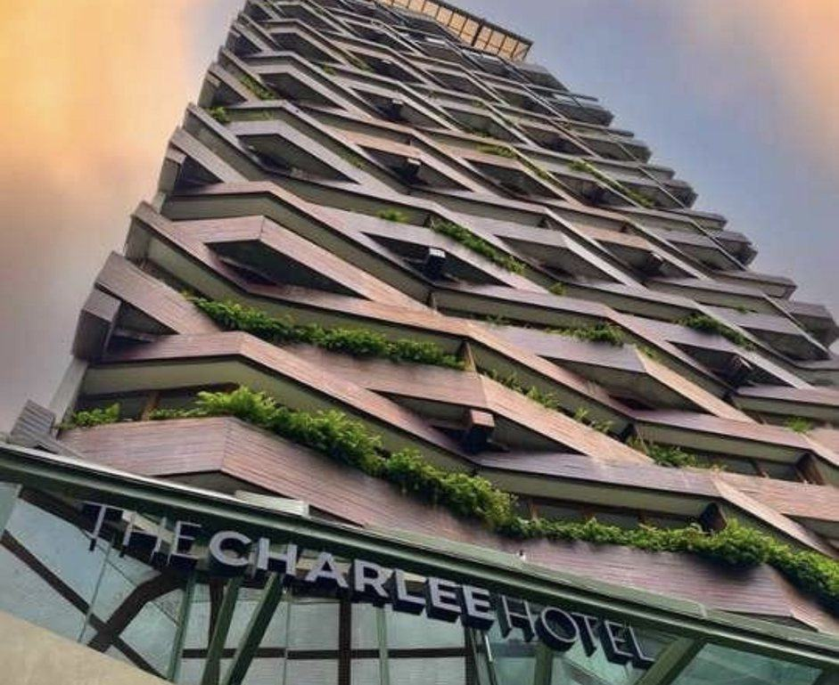
The Charlee Hotel $$$
Among the best-rated in the city: rooftop pool, spa and a trendy atmosphere.
De los mejor calificados de la ciudad: piscina en la azotea, spa y ambiente moderno.
Calle 9A #37-16, Parque Lleras, El Poblado · +57 604 444 4968
See Google reviews & mapCalle 9A #37-16, Parque Lleras, El Poblado · +57 604 444 4968
Ver reseñas y mapa en Google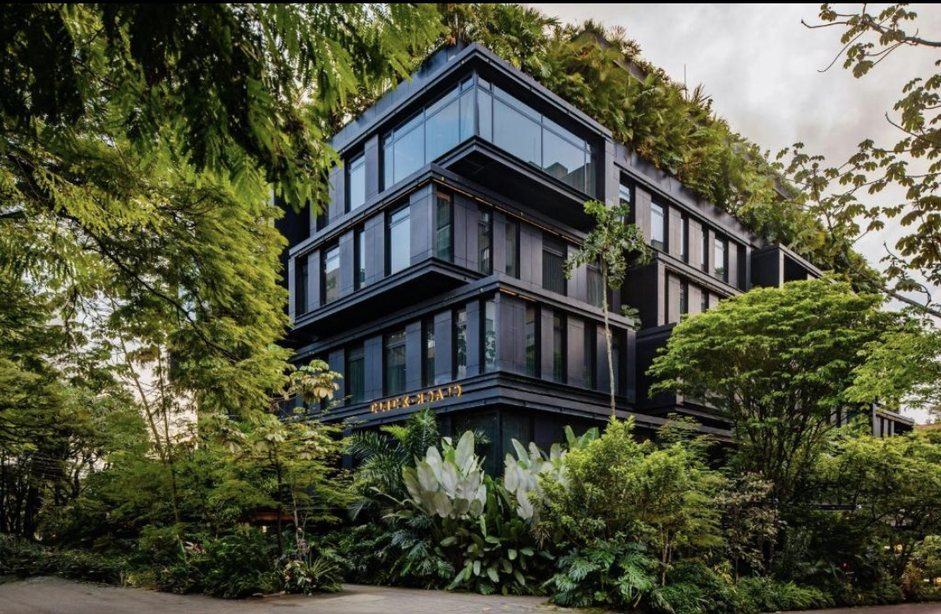
Hotel Click Clack Medellín $$
Modern design, a lively rooftop and a great location near Provenza.
Diseño moderno, un rooftop animado y muy buena ubicación cerca de Provenza.
Calle 10B #37-29, El Poblado · +57 320 417 0006
See Google reviews & mapCalle 10B #37-29, El Poblado · +57 320 417 0006
Ver reseñas y mapa en Google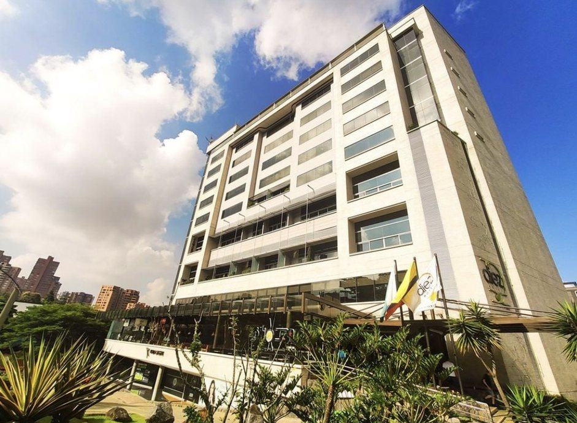
Diez Hotel Categoría Colombia $$
Decorated with the colors and crafts of Colombia: you feel the culture from the lobby.
Decorado con los colores y artesanías de Colombia: se siente la cultura desde el lobby.
Calle 10A #34-11, El Poblado · +57 604 448 1034
See Google reviews & mapCalle 10A #34-11, El Poblado · +57 604 448 1034
Ver reseñas y mapa en Google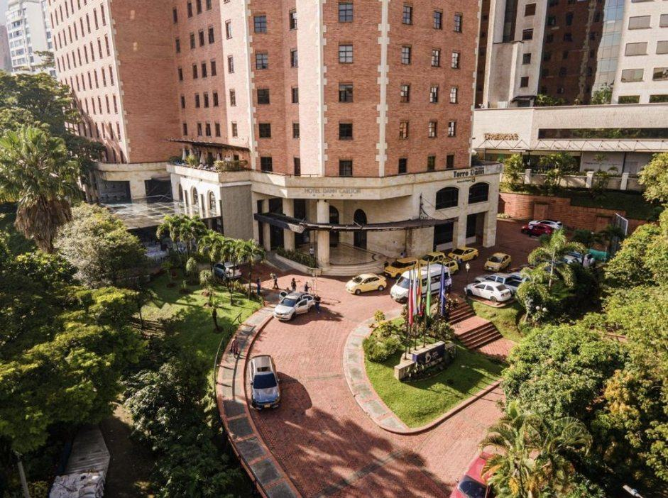
Hotel Dann Carlton $$
A traditional, trusted hotel with spacious rooms and views over the city.
Un hotel tradicional y de confianza, con habitaciones amplias y vista sobre la ciudad.
Carrera 43A #7-50, Av. El Poblado · +57 604 444 5151
See Google reviews & mapCarrera 43A #7-50, Av. El Poblado · +57 604 444 5151
Ver reseñas y mapa en GooglePatio del Mundo $$
A small boutique hotel of 13 rooms with a big garden and terraces, 500 m from Provenza. Very highly rated by travelers.
Un pequeño hotel boutique de 13 habitaciones con un gran jardín y terrazas, a 500 metros de Provenza. Muy bien calificado por los viajeros.
Calle 5G #32-49, El Poblado · +57 322 416 5200
See Google reviews & mapCalle 5G #32-49, El Poblado · +57 322 416 5200
Ver reseñas y mapa en GoogleLaureles · La 70Laureles · La 70
Flat, leafy and very local, close to the stadium and the Metro. More affordable than El Poblado.
Plana, arborizada y muy paisa, cerca del estadio y del Metro. Más económica que El Poblado.
Urbit Garden Hotel $$
Top-rated in Laureles-Estadio, surrounded by greenery.
De los mejor calificados de Laureles-Estadio, rodeado de verde.
Laureles, near Primer & Segundo Parque de Laureles
See Google reviews & mapLaureles, cerca del Primer y Segundo Parque de Laureles
Ver reseñas y mapa en GoogleHotel Dorado La 70 $$
On Carrera 70 #44B-66, with thousands of excellent reviews. Pet-friendly.
En la Carrera 70 #44B-66, con miles de reseñas excelentes. Acepta mascotas.
Carrera 70 #44B-66, Laureles · +57 604 260 0666
See Google reviews & mapCarrera 70 #44B-66, Laureles · +57 604 260 0666
Ver reseñas y mapa en GoogleHotel Lares 70 $
Simple and affordable, a short walk from the stadium and the Metro.
Sencillo y económico, a pocos pasos del estadio y del Metro.
Carrera 69 #46B-28, Laureles
See Google reviews & mapCarrera 69 #46B-28, Laureles
Ver reseñas y mapa en GoogleBudget option for familiesOpción económica para familias
Itagüí, next to the Central Mayorista, the region's biggest wholesale market: lower prices, rooms for the whole family and close to the Metro.
Itagüí, junto a la Central Mayorista, la central de abastos más grande de la región: precios más bajos, habitaciones para toda la familia y cerca del Metro.
Hotel Central Plaza $
The best referenced in the area: 4.2 on Google with about 2,000 reviews. Triple rooms ideal for families, private bathroom with hot water, A/C or fan, safe and room service.
Carrera 50A #81A-15, Itagüí · +57 310 692 5352
El mejor referenciado de la zona: 4.2 en Google con unas 2.000 opiniones. Habitaciones triples ideales para familias, baño privado con agua caliente, aire o ventilador, cajilla de seguridad y servicio a la habitación.
Carrera 50A #81A-15, Itagüí · +57 310 692 5352
Hotel Macedonia Plaza $
A family-oriented option with quadruple rooms, 5 minutes from Ayurá Metro station.
Opción pensada para familias, con habitaciones cuádruples, a 5 minutos de la estación Ayurá del Metro.
Carrera 50A #84A-03, Itagüí
See Google reviews & mapCarrera 50A #84A-03, Itagüí
Ver reseñas y mapa en GoogleA luxury night in the SouthwestUna noche de lujo en el Suroeste
Cauca Viejo $$$
A private town on the Cauca River with cobblestone streets, colorful balconies and pools. You can only enter with a lodging reservation: it is a luxury, VIP-style stay, perfect for one or two special nights on the way to Jericó.
Un pueblo privado a orillas del río Cauca, con calles empedradas, balcones de colores y piscinas. Solo se entra con reserva de hospedaje: es un plan de lujo, tipo VIP, perfecto para una o dos noches especiales camino a Jericó.
Road to Bolombolo, km 18 · about 2–2.5 h from Medellín
Vía a Bolombolo, km 18 · a unas 2 a 2,5 h de Medellín
See Google reviews & mapVer reseñas y mapa en GoogleTraveling solo: hostelsSi viaja solo: hostales
The easiest way to meet other travelers. Our pick has shared dorms and private rooms, activities and staff who speak English.
La forma más fácil de conocer otros viajeros. Nuestro recomendado tiene dormitorios compartidos y habitaciones privadas, actividades y personal que habla inglés.
Los Patios Hostal Boutique $$
Often called the best hostel in Medellín and a favorite of women traveling solo: modern design, rooftop bar with a view, yoga and salsa classes. Restaurants and nightlife two blocks away.
Muchos lo consideran el mejor hostal de Medellín y es favorito de las mujeres que viajan solas: diseño moderno, bar en la terraza con vista, clases de yoga y salsa. Restaurantes y rumba a dos cuadras.
Manila, El Poblado · Metro: Poblado
Manila, El Poblado · Metro: Poblado
See Google reviews & mapVer reseñas y mapa en GoogleTraveling solo: AirbnbSi viaja solo: Airbnb
Airbnb listings change every week, so instead of one apartment we show you the 4 best areas for one person. Each button opens Airbnb already searching for 1 guest in that area.
Los apartamentos de Airbnb cambian cada semana, así que en vez de un solo apartamento le mostramos las 4 mejores zonas para una persona. Cada botón abre Airbnb buscando para 1 huésped en esa zona.
Manila · El Poblado $$
The most popular area for first-time visitors: cafés, restaurants and Metro nearby. Ideal for short stays.
La zona preferida por quienes vienen por primera vez: cafés, restaurantes y Metro cerca. Ideal para estadías cortas.
El Poblado
El Poblado
Search on AirbnbBuscar en AirbnbProvenza $$$
The trendiest corner of El Poblado, right next to the bars and the reggaeton stars’ clubs. Can be noisy on weekends.
El rincón más de moda de El Poblado, al lado de los bares y las discotecas de los reggaetoneros. Puede ser ruidoso los fines de semana.
El Poblado
El Poblado
Search on AirbnbBuscar en AirbnbLaureles $$
Flat, leafy and very paisa, with lower prices than El Poblado. The best choice for stays of a week or more.
Plano, arborizado y muy paisa, con precios más bajos que El Poblado. La mejor opción para quedarse una semana o más.
Laureles · Metro: Estadio
Laureles · Metro: Estadio
Search on AirbnbBuscar en AirbnbEnvigado $
Just south of El Poblado, with its own main park, restaurants and Metro. Calm, safe and great value.
Justo al sur de El Poblado, con su parque principal, restaurantes y Metro. Tranquilo, seguro y con buenos precios.
Envigado · Metro: Envigado
Envigado · Metro: Envigado
Search on AirbnbBuscar en AirbnbChoosing a safe Airbnb when you travel alone
Cómo escoger un Airbnb seguro si viaja solo
Choose "Superhost" or "Guest favorite" listings with many recent reviews.
Escoja anuncios "Superanfitrión" o "Favorito entre huéspedes", con muchas reseñas recientes.
Prefer buildings with 24-hour doorman (portería) and self check-in.
Prefiera edificios con portería 24 horas y llegada autónoma.
Always pay and message inside the Airbnb app — never by transfer or WhatsApp.
Pague y escriba siempre dentro de la app de Airbnb, nunca por transferencia ni WhatsApp.
Share your location with family and use app taxis at night.
Comparta su ubicación con la familia y de noche use taxi de aplicación.
Never bring strangers you just met to your apartment.
Nunca lleve a su apartamento personas que acaba de conocer.
Booking tipsConsejos para reservar
Book early for December, the Flower Festival (August) and long weekends.
Reserve con tiempo para diciembre, la Feria de las Flores (agosto) y los puentes festivos.
Prices change by date: compare on the booking sites before paying.
Los precios cambian según la fecha: compare en las páginas de reserva antes de pagar.
Choose options with free cancellation and read the most recent reviews.
Prefiera opciones con cancelación gratis y lea las reseñas más recientes.
The Eastern Route
La Ruta del Oriente
Colonial towns, flowers, ceramics and cool mountain air, less than an hour and a half from Medellín.
Pueblos coloniales, flores, cerámica y aire frío de montaña, a menos de hora y media de Medellín.
What to do: A charming 18th-century town with a colonial main park, an old church and quiet streets. It is famous throughout Colombia for its woodworking (ebanistería) tradition.
Qué hacer: Un pueblito encantador del siglo XVIII, con parque principal colonial, iglesia antigua y calles tranquilas. Es famoso en toda Colombia por su tradición en ebanistería.
Don't miss: Visit a woodworking workshop and, just outside town, the Salto del Tequendamita waterfall.
No se pierda: Visitar un taller de ebanistería y, a las afueras, el Salto del Tequendamita.
Getting there: By bus from Medellín’s Terminal del Norte (about 1 h) or by taxi.
Cómo llegar: En bus desde la Terminal del Norte de Medellín (alrededor de 1 h) o en taxi.
What to bring: A jacket or sweater, comfortable shoes and an umbrella: it rains often.
Qué llevar: Chaqueta o saco, zapatos cómodos y sombrilla: llueve con frecuencia.
Google MapsWhat to do: A beautiful waterfall surrounded by green hills, perfect for photos and a breath of fresh mountain air.
Qué hacer: Una hermosa cascada rodeada de montañas verdes, perfecta para fotos y para respirar aire puro de montaña.
Don't miss: Stop for a hot drink or a snack while you enjoy the view of the falls.
No se pierda: Hacer una parada para un algo caliente mientras disfruta la vista de la cascada.
Getting there: It’s on the road between Medellín and El Retiro: go by car or taxi.
Cómo llegar: Queda sobre la vía entre Medellín y El Retiro: vaya en carro o en taxi.
What to bring: A jacket and shoes that can get wet: the area near the waterfall is damp.
Qué llevar: Chaqueta y zapatos que se puedan mojar: cerca de la cascada hay humedad.
Google MapsWhat to do: Known as the "Antioquian capital of flowers", with flower-filled plazas and fresh highland weather. It is also one of the most bike-friendly towns in Colombia.
Qué hacer: Conocida como la "Capital antioqueña de las flores", con plazas llenas de flores y clima frío de montaña. También es uno de los pueblos más bicicleteros de Colombia.
Don't miss: A coffee in the main park watching the bicycles go by.
No se pierda: Un tinto en el parque principal viendo pasar las bicicletas.
Getting there: By bus from the Terminal del Norte or the Terminal del Sur (about 1 h 10), or by car.
Cómo llegar: En bus desde la Terminal del Norte o la Terminal del Sur (alrededor de 1 h 10), o en carro.
What to bring: A jacket or sweater, comfortable shoes and an umbrella: it rains often.
Qué llevar: Chaqueta o saco, zapatos cómodos y sombrilla: llueve con frecuencia.
Salto del Buey: about 6 km from town, in the Los Saltos reserve: a waterfall of about 90 meters in a canyon, with a zip line that is among the highest in Colombia. Best with a tour from Medellín (1.5–2 h).
Salto del Buey: a unos 6 km del pueblo, en la reserva Los Saltos: una cascada de unos 90 metros en un cañón, con un canopy de los más altos de Colombia. Mejor con un tour desde Medellín (1,5 a 2 h).
Google MapsWhat to do: A small, picturesque village famous for its traditional homestyle cooking and its desserts.
Qué hacer: Un pueblito pintoresco famoso por su comida casera tradicional y sus postres.
Don't miss: Lunch here and save room for dessert!
No se pierda: Almorzar aquí ¡y dejar espacio para el postre!
Getting there: It’s a few minutes from Rionegro: taxi from Rionegro or by car.
Cómo llegar: Queda a pocos minutos de Rionegro: taxi desde Rionegro o en carro.
What to bring: A light jacket and an appetite for desserts.
Qué llevar: Chaqueta liviana y ganas de postre.
Google MapsWhat to do: The "cradle of handmade ceramics": since 1898 its families have made dishes painted by hand with flowers of the region like hydrangeas. Its tradition is Intangible Heritage of the Nation, and its ceramics even appeared in Disney's movie "Encanto".
Qué hacer: La "cuna de la cerámica artesanal": desde 1898 sus familias hacen vajillas pintadas a mano con flores de la región como las hortensias. Su tradición es Patrimonio Inmaterial de la Nación, y su cerámica hasta apareció en la película "Encanto" de Disney.
Don't miss: Walk the Calle de la Cerámica, visit the Ceramics Museum, and in some workshops make your own piece on the potter's wheel.
No se pierda: Recorrer la Calle de la Cerámica, visitar el Museo de Cerámica y, en algunos talleres, hacer su propia pieza en el torno.
Getting there: By bus with Flota El Carmen from the Terminal del Norte (you can pay with the Cívica card), or by car.
Cómo llegar: En bus de Flota El Carmen desde la Terminal del Norte (se puede pagar con la tarjeta Cívica), o en carro.
What to bring: A jacket and some extra space in your suitcase for ceramics. Ask the shop to wrap them well for the flight.
Qué llevar: Chaqueta y espacio en la maleta para la cerámica. Pida que se la empaquen bien para el avión.
Google MapsWhat to do: One of the most historic towns in Antioquia, with a colonial center of cobblestone streets and wooden balconies. Today it is also the modern, growing economic heart of the East, with shopping centers and restaurants.
Qué hacer: Uno de los pueblos más históricos de Antioquia, con un centro colonial de calles empedradas y balcones de madera. Hoy es además el corazón moderno y económico del Oriente, con centros comerciales y restaurantes.
Don't miss: A walk around its main square; it's ideal on your way to or from the airport.
No se pierda: Un paseo por su plaza principal; ideal camino al aeropuerto o al regresar.
Getting there: Next to the airport: taxi from the airport or bus from the Terminal del Norte.
Cómo llegar: Al lado del aeropuerto: taxi desde el aeropuerto o bus desde la Terminal del Norte.
What to bring: Comfortable shoes and a light jacket.
Qué llevar: Zapatos cómodos y chaqueta liviana.
Google MapsWhat to do: The countryside area just south of Rionegro, near the airport: country estates, gardens, cafés and some of the best country-style restaurants in the East, surrounded by green mountains.
Qué hacer: La zona campestre al sur de Rionegro, cerca del aeropuerto: fincas, jardines, cafés y algunos de los mejores restaurantes campestres del Oriente, rodeados de montañas verdes.
Don't miss: A relaxed lunch or brunch on a terrace with a view, before catching your flight.
No se pierda: Un almuerzo o desayuno tranquilo en una terraza con vista, antes de tomar el vuelo.
Getting there: By taxi or car; it’s about 15 minutes from the airport.
Cómo llegar: En taxi o en carro; queda a unos 15 minutos del aeropuerto.
What to bring: A jacket: the country terraces get cool, especially in the evening.
Qué llevar: Chaqueta: las terrazas campestres son frescas, sobre todo en la tarde.
Google MapsWhat to do: A traditional colonial town whose Holy Week is one of the most beautiful and traditional in eastern Antioquia.
Qué hacer: Un pueblo colonial tradicional cuya Semana Santa es una de las más bellas y tradicionales del Oriente antioqueño.
Don't miss: If you travel at Easter, don't miss its processions. It's also on the way to Guatapé.
No se pierda: Si viaja en Semana Santa, no se pierda sus procesiones. Además, queda camino a Guatapé.
Getting there: On the Medellín–Bogotá highway, on the way to Guatapé: bus from the Terminal del Norte or by car.
Cómo llegar: Sobre la autopista Medellín–Bogotá, camino a Guatapé: bus desde la Terminal del Norte o en carro.
What to bring: A jacket; in Holy Week, comfortable shoes for the processions.
Qué llevar: Chaqueta; en Semana Santa, zapatos cómodos para las procesiones.
Google MapsThe route in one dayLa ruta en un día
- 8:00 a.m.8:00 a. m. Leave Medellín via Las Palmas.Salida de Medellín por Las Palmas.
- 9:00 a.m.9:00 a. m. Breakfast in El Retiro and a visit to a woodworking shop.Desayuno en El Retiro y visita a un taller de ebanistería.
- 10:30 a.m.10:30 a. m. Salto del Tequendamita.Salto del Tequendamita.
- 11:30 a.m.11:30 a. m. La Ceja: main park and flowers.La Ceja: parque principal y flores.
- 1:00 p.m.1:00 p. m. Lunch and dessert in San Antonio de Pereira.Almuerzo y postre en San Antonio de Pereira.
- 3:00 p.m.3:00 p. m. El Carmen de Viboral: ceramics street and workshops.El Carmen de Viboral: calle de la cerámica y talleres.
- 5:00 p.m.5:00 p. m. Rionegro's historic center and return through the Túnel de Oriente.Centro histórico de Rionegro y regreso por el Túnel de Oriente.
"Los siete golpes del paisa""Los siete golpes del paisa"
A food route created by the Government of Antioquia with around 80 restaurants in El Retiro, La Ceja, El Carmen de Viboral, Marinilla and Rionegro, to eat as the ancestors did at every moment of the day.
Una ruta gastronómica de la Gobernación de Antioquia con unos 80 restaurantes en El Retiro, La Ceja, El Carmen de Viboral, Marinilla y Rionegro, para comer como los ancestros en cada momento del día.
Experience: shopping in El Hueco
Medellín's busiest shopping area, in the heart of downtown.
What is it?
For decades, people have called the Guayaquil area of downtown "El Hueco". It is a maze of shopping arcades, warehouses and small malls with thousands of merchants selling both wholesale and retail.
You'll find mostly clothing, plus shoes, accessories, electronics, toys, home goods and even furniture, at low prices. It's especially famous for its caps, a must in paisa street style.
The atmosphere
Loud and full of life: vendors calling out prices, colorful umbrellas, fruit carts on the sidewalks, music and crowds. More than shopping, it's a true paisa experience.
How to get there
By Metro to San Antonio station (Lines A and B), or the tram stop with the same name.
Best time
During the day, ideally between 9 a.m. and 3 p.m. Don't go at night.
"No dar papaya" in El Hueco
Bring cash: not every vendor takes cards.
Keep your bag in front of you and your belongings in sight: it's very crowded.
Don't walk around with your phone in your hand.
Stick to the streets with lots of shoppers.
Bargaining is common: ask for the price "al por mayor" if you buy several items.
Going for the first time? Go with someone who knows the area.
Experiencia: de compras en El Hueco
La zona comercial más concurrida de Medellín, en pleno centro.
¿Qué es?
Desde hace décadas, al sector de Guayaquil, en el centro, la gente le dice "El Hueco". Es un laberinto de pasajes comerciales, bodegas y pequeños centros comerciales con miles de comerciantes que venden al por mayor y al detal.
Se consigue sobre todo ropa, además de calzado, accesorios, tecnología, juguetes, cosas para la casa y hasta muebles, a buenos precios. Es muy famoso por las gorras, infaltables en la moda urbana paisa.
El ambiente
Bullicioso y lleno de vida: vendedores anunciando precios, sombrillas de colores, carretas de frutas en las aceras, música y mucha gente. Más que ir de compras, es toda una experiencia paisa.
Cómo llegar
En Metro hasta la estación San Antonio (líneas A y B), o la parada del tranvía con el mismo nombre.
Mejor horario
De día, idealmente entre 9 a. m. y 3 p. m. No vaya de noche.
"No dar papaya" en El Hueco
Lleve efectivo: no todos reciben tarjeta.
Lleve el bolso adelante y sus cosas siempre a la vista: hay mucha gente.
No camine con el celular en la mano.
Ande por las calles con movimiento de compradores.
Se puede regatear: pregunte el precio "al por mayor" si compra varias cosas.
¿Va por primera vez? Vaya con alguien de la ciudad.
Quick guide
Ficha rápida
Distance: Metro to San Antonio station, about 20 min from El Poblado.
Distancia: Metro hasta la estación San Antonio, unos 20 min desde El Poblado.
Time: 2–4 hours.
Tiempo: de 2 a 4 horas.
Weather: hot and crowded downtown.
Clima: calor y mucha gente en el centro.
What to bring: simple clothes, a crossbody bag worn in front, cash in small bills and an empty bag for your purchases. No jewelry.
Qué llevar: ropa sencilla, bolso cruzado adelante, efectivo en billetes pequeños y una bolsa vacía para las compras. Nada de joyas.
Souvenirs to take home
Recuerdos para llevar
What to buy: Colombian coffee · a carriel or leather goods · a sombrero aguadeño · hand-painted ceramics from El Carmen de Viboral · a graffiti T-shirt from Comuna 13 · bocadillo and local sweets.
Qué comprar: café colombiano · un carriel o artículos de cuero · un sombrero aguadeño · cerámica pintada a mano de El Carmen de Viboral · una camiseta de grafiti de la Comuna 13 · bocadillo y dulces típicos.
Mercado de San Alejo (Parque de Bolívar, downtown): the most traditional craft market in Medellín, with about 300 artisans. Only the first Saturday of each month, 9 a.m.–6 p.m. Free entry.
Mercado de San Alejo (Parque de Bolívar, centro): el mercado artesanal más tradicional de Medellín, con unos 300 artesanos. Solo el primer sábado de cada mes, de 9 a. m. a 6 p. m. Entrada libre.
Around Plaza Botero and Pasaje Junín: souvenir shops and craft stalls a few steps from El Hueco. The Museo de Antioquia shop has Botero souvenirs.
Alrededor de la Plaza Botero y el Pasaje Junín: tiendas de recuerdos y puestos de artesanías a pocos pasos de El Hueco. La tienda del Museo de Antioquia tiene recuerdos de Botero.
Palacio Nacional (El Hueco): an old palace turned shopping center, full of cheap stores.
Palacio Nacional (El Hueco): un antiguo palacio convertido en centro comercial, lleno de tiendas económicas.
Pueblito Paisa (Cerro Nutibara): craft shops with carrieles, sombreros and leather goods, plus a great view.
Pueblito Paisa (Cerro Nutibara): tiendas de artesanías con carrieles, sombreros y cuero, y además una vista muy bonita.
Specialty coffee: coffee shops in El Poblado and Laureles sell coffee in gift boxes.
Café de especialidad: las cafeterías de El Poblado y Laureles venden café en cajas de regalo.
Tip: compare prices at several stalls before buying, and ask: vendors are usually open to a good deal.
Consejo: compare precios en varios puestos antes de comprar y pregunte: los vendedores suelen dar buen precio.
Fuentes / Sources: Alcaldía de Medellín, Medellín Travel, Fodor’s, Culture Trip, Medellín Guru.
The reggaeton stars' Medellín
El Medellín de los reggaetoneros
Medellín is the capital of reggaeton, and its stars have opened their own places. Eat at Maluma's, dance at Karol G's… and who knows, you might bump into them!
Medellín es la capital del reggaetón, y sus estrellas abrieron sus propios negocios. Coma donde Maluma, baile donde Karol G… ¡y quién quita que se los encuentre!
Casa Eterna · Maluma
Maluma's restaurant, a tribute to Colombian culture: grandmothers' recipes with a modern touch by chef María Antonia Vélez, traditional Antioquian architecture and a stage for live music.
El restaurante de Maluma, un homenaje a la cultura colombiana: recetas de las abuelas con un toque moderno de la chef María Antonia Vélez, arquitectura antioqueña tradicional y escenario para música en vivo.
Alto de Las Palmas, near Envigado and Rionegro · book ahead
See Google reviews & mapAlto de Las Palmas, cerca de Envigado y Rionegro · reserve antes
Ver reseñas y mapa en GoogleEl Callejón del Gato · Karol G
Karol G's nightclub: reggaeton, oldies and neon-lit street-art décor. Karol G has shown up by surprise to sing live.
La discoteca de Karol G: reggaetón, clásicos y una decoración de neón y grafiti callejero. Karol G ha llegado de sorpresa a cantar en vivo.
Cra. 35 #7-33, basement · Provenza, El Poblado
See Google reviews & mapCra. 35 #7-33, sótano · Provenza, El Poblado
Ver reseñas y mapa en GoogleCarolina & Provenza · Karol G
Karol G's restaurant and bar, in the same building as her nightclub: dinner, salsa and drinks before the party.
El restaurante y el bar de Karol G, en el mismo edificio de su discoteca: comida, salsa y tragos antes de la rumba.
Same building as El Callejón del Gato · Provenza
See Google reviews & mapMismo edificio de El Callejón del Gato · Provenza
Ver reseñas y mapa en Google903 · Maluma
Maluma's luxury nightclub, opened in 2025 with the motto "mi casa es su casa". The name is his daughter Paris's birthday. Live artists from 9 p.m. to 4 a.m.
La discoteca de lujo de Maluma, abierta en 2025 con el lema "mi casa es su casa". El nombre es la fecha de cumpleaños de su hija Paris. Artistas en vivo de 9 p. m. a 4 a. m.
Provenza, a few meters from Karol G's places
See Google reviews & mapProvenza, a pocos metros de los negocios de Karol G
Ver reseñas y mapa en GoogleMedallo Club · Blessd
Blessd's nightclub, named after his hit song "Medallo": pure reggaeton, from the classics to the newest hits.
La discoteca de Blessd, con el nombre de su éxito "Medallo": puro reggaetón, de los clásicos a lo más nuevo.
Provenza, El Poblado
See Google reviews & mapProvenza, El Poblado
Ver reseñas y mapa en GooglePerro Negro
Not owned by a singer: it was founded in 2017 by two local businessmen, Alejandro Cardona and Samuel Granados (The Hacienda group, which also runs Mamba Negra). It's the most famous reggaeton club in the world, playing only reggaeton, it now has branches in Miami and Madrid, and Bad Bunny and Feid wrote a song named after it. Karol G, J Balvin, Maluma and Feid have partied here.
No es de un cantante: la fundaron en 2017 dos empresarios paisas, Alejandro Cardona y Samuel Granados (grupo The Hacienda, que también tiene Mamba Negra). Es la discoteca de reggaetón más famosa del mundo, toca solo reggaetón, ya tiene sedes en Miami y Madrid, y Bad Bunny y Feid le hicieron una canción con su nombre. Aquí han rumbeado Karol G, J Balvin, Maluma y Feid.
Cra. 35 #7-83 · Provenza · small venue: arrive early
See Google reviews & mapCra. 35 #7-83 · Provenza · es pequeña: llegue temprano
Ver reseñas y mapa en GoogleParty smart ("no dar papaya")
Rumbee sin dar papaya
Bring your passport (the original): clubs ask for ID at the door. 18+ only.
Lleve su pasaporte (el original): en la puerta piden documento. Solo mayores de 18.
Book a table through their Instagram on weekends, and check the dress code.
Los fines de semana reserve mesa por su Instagram y pregunte el código de vestimenta.
Arrive and leave by app taxi. Never leave your drink unattended or accept drinks from strangers.
Llegue y salga en taxi de aplicación. Nunca deje su trago solo ni reciba tragos de desconocidos.
The stars don't show up every night: if you see them, it's a bonus!
Los artistas no van todas las noches: ¡si los ve, es de buenas!
Heritage towns of the West and Southwest
Pueblos patrimonio del Occidente y Suroeste
Three towns that tell the story of Antioquia: the old colonial capital, the birthplace of the carriel and of Colombia's first saint, and the most colorful plaza in the coffee region.
Tres pueblos que cuentan la historia de Antioquia: la antigua capital colonial, la cuna del carriel y de la primera santa de Colombia, y la plaza más colorida de la zona cafetera.
Jericó · the Athens of the Southwest
Jericó · la Atenas del Suroeste
Why go: Founded in 1850 during the Antioquian colonization, Jericó is a Heritage Town of Colombia with colorful balconies, cobblestone streets and 17 churches and sacred sites. Its love of culture and learning earned it the nickname "the Athens of the Southwest".
Por qué ir: Fundado en 1850 durante la colonización antioqueña, Jericó es Pueblo Patrimonio de Colombia, con balcones de colores, calles empedradas y 17 templos y recintos sagrados. Por su cultura y su gente estudiosa le dicen "la Atenas del Suroeste".
Also visit: The MAJA (Anthropology and Art Museum), the Casa de la Música with instruments from every continent, the Religious Art Museum under the cathedral, and the Botanical Garden.
Visite también: El MAJA (Museo de Antropología y Arte), la Casa de la Música con instrumentos de todos los continentes, el Museo de Arte Religioso debajo de la catedral y el Jardín Botánico.
What to bring: A sweater for the evenings, an umbrella (it rains often), hiking shoes for Las Nubes and some cash for the carriel workshops.
Qué llevar: Saco para la noche, sombrilla (llueve seguido), zapatos para caminar a Las Nubes y efectivo para los talleres de carrieles.
Google MapsThe story: In the 1800s the arrieros (muleteers) crossed the mountains of Antioquia, Caldas, Risaralda and Quindío with their mules, opening roads and founding towns. They needed a bag to carry everything: money, letters, a razor, tobacco, a lighter, a little saint for protection… That is how the carriel (or guarniel) was born, and Jericó is where they began to be made and where the finest ones are still made today.
La historia: En los años 1800 los arrieros cruzaban con sus mulas las montañas de Antioquia, Caldas, Risaralda y Quindío, abriendo caminos y fundando pueblos. Necesitaban un bolso para llevarlo todo: la plata, las cartas, la barbera, el tabaco, el encendedor, la estampita del santo… Así nació el carriel (o guarniel), y Jericó es donde se empezaron a hacer y donde se siguen haciendo los mejores.
Its secrets: It opens like an accordion and has around 9 pockets — 3 of them hidden in the lining, the famous "secret" pockets for coins and important papers. It is the bag Juan Valdez carries on his arm.
Sus secretos: Se abre como un acordeón y tiene unos 9 bolsillos, 3 escondidos en el forro: los famosos "secretos", para guardar monedas y papeles importantes. Es el bolso que Juan Valdez lleva colgado del brazo.
Honored: In 2024 the Banco de la República launched a commemorative coin of the carriel from Jericó, and the Jericó carriel now has its own designation of origin.
Un honor: En 2024 el Banco de la República lanzó desde Jericó una moneda conmemorativa del carriel, y el carriel de Jericó ya tiene denominación de origen.
Tip: Visit a guarnielería (carriel workshop) a block up from the main church: you can watch the artisans at work and buy one handmade. Each one supports a craft that is disappearing.
Consejo: Visite una guarnielería una cuadra arriba de la iglesia principal: puede ver a los artesanos trabajando y comprar uno hecho a mano. Cada compra ayuda a un oficio que se está perdiendo.
Google MapsThe story: Laura Montoya Upegui was born in Jericó on May 26, 1874. She was a teacher who went into the jungles to live with and defend indigenous communities, and founded the Lauritas missionary sisters. Pope John Paul II beatified her in 2004, and Pope Francis canonized her in May 2013: she is the first Colombian saint.
La historia: Laura Montoya Upegui nació en Jericó el 26 de mayo de 1874. Fue maestra y se internó en las selvas para vivir con las comunidades indígenas y defenderlas; fundó las hermanas misioneras "Lauritas". El Papa Juan Pablo II la beatificó en 2004 y el Papa Francisco la canonizó en mayo de 2013: es la primera santa colombiana.
What to visit: Her birth house, now a museum with her baptismal font and family photos, and the Santuario de Santa Laura (the pink church), where pilgrims come from all over the country.
Qué visitar: Su casa natal, hoy museo con la pila bautismal y fotos de su familia, y el Santuario de Santa Laura (la iglesia rosada), a donde llegan peregrinos de todo el país.
Tip: Holy Week is the busiest time: book your lodging early.
Consejo: Semana Santa es la época más llena: reserve hospedaje con tiempo.
What to bring: Respectful clothing to enter the sanctuary (shoulders covered).
Qué llevar: Ropa respetuosa para entrar al santuario (hombros cubiertos).
Google MapsWhat to do: Las Nubes is a nature reserve of more than 100 hectares of forest with birds, butterflies and monkeys, and the best view over the Cauca River canyon. The hike takes 1–2 hours uphill. For sunset, go up to the Cristo Salvador statue, which looks over the whole town.
Qué hacer: Las Nubes es una reserva natural de más de 100 hectáreas de bosque con aves, mariposas y monos, y la mejor vista sobre el cañón del río Cauca. La caminata es de 1 a 2 horas en subida. Para el atardecer, suba al Cristo Salvador, que mira todo el pueblo.
Tip: Wear good shoes and go in the morning, before the clouds come in.
Consejo: Lleve buenos zapatos y vaya en la mañana, antes de que bajen las nubes.
What to bring: Hiking shoes, a light raincoat, water and a sweater.
Qué llevar: Zapatos para caminar, impermeable liviano, agua y un saco.
Google MapsWhat it is: A "private town" on the banks of the Cauca River, in the municipality of Jericó, built as a tribute to the Antioquian settlers: cobblestone streets, colorful balconies, a main square with a fountain and big shade trees, and even a replica of an old railway station. It is a gated community with 24-hour security and warm weather (around 26 °C).
Qué es: Un "pueblo privado" a orillas del río Cauca, en el municipio de Jericó, construido en homenaje a los colonizadores antioqueños: calles empedradas, balcones de colores, plaza principal con fuente y árboles grandes, y hasta una réplica de una antigua estación del tren. Es una urbanización cerrada con vigilancia 24 horas y clima caliente (unos 26 °C).
Important: Cauca Viejo is not a town you can visit for the day: it is private and you can only enter if you are staying there. It is a luxury, VIP-style stay — beautiful, but not budget-friendly. Book your hotel or house in advance.
Importante: Cauca Viejo no es un pueblo para visitar de paso: es privado y solo se entra si se va a hospedar allí. Es un hospedaje de lujo, tipo VIP: precioso, pero no es económico. Reserve el hotel o la casa con anticipación.
Where to stay: Hotel Cauca Viejo Fundadores (pools and breakfast) or the small boutique hotels on the main square, like Casa Cedrela (guests 14 and older).
Dónde dormir: El Hotel Cauca Viejo Fundadores (piscinas y desayuno) o los hoteles boutique pequeños de la plaza, como Casa Cedrela (para mayores de 14 años).
What to do: Relax by the pool, walk the ecological trail along the river with birdwatching, and go up to the viewpoint over the Cauca River canyon. Ideal for one or two special nights on your way to Jericó.
Qué hacer: Descansar en la piscina, caminar el sendero ecológico junto al río viendo aves y subir al mirador sobre el cañón del río Cauca. Ideal para una o dos noches especiales camino a Jericó.
What to bring: Swimsuit, sunscreen, cool clothes and a nice outfit for dinner.
Qué llevar: Vestido de baño, bloqueador, ropa fresca y una pinta bonita para la cena.
Google MapsSanta Fe de Antioquia · the colonial mother city
Santa Fe de Antioquia · la ciudad madre
The story: Founded in 1541 by Jorge Robledo, it was the capital of Antioquia until 1826, before Medellín. Its historic center is a National Monument: whitewashed colonial houses, carved wooden doors, flowered windows and stone streets.
La historia: Fundada en 1541 por Jorge Robledo, fue la capital de Antioquia hasta 1826, antes que Medellín. Su centro histórico es Monumento Nacional: casas coloniales blancas, portones de madera tallada, ventanas con flores y calles de piedra.
What to do: Walk the main park and its churches, visit the Juan del Corral Museum, try the tamarind sweets the town is famous for, and enjoy a hotel pool: it is hot here (25–35 °C).
Qué hacer: Recorra el parque principal y sus iglesias, visite el Museo Juan del Corral, pruebe los dulces de tamarindo por los que el pueblo es famoso y disfrute una piscina de hotel: aquí hace calor (25 a 35 °C).
Getting there: Since 2006 the Túnel de Occidente cuts the trip to about one hour. Buses leave from the Terminal del Norte.
Cómo llegar: Desde 2006 el Túnel de Occidente dejó el viaje en una hora aproximadamente. Los buses salen de la Terminal del Norte.
What to bring: Light, cool clothes, a hat, sunscreen, water and a swimsuit for the hotel pool.
Qué llevar: Ropa fresca y liviana, sombrero, bloqueador, agua y vestido de baño para la piscina del hotel.
Google MapsThe story: Built between 1887 and 1895 by the Antioquian engineer José María Villa, it is a 291-meter suspension bridge of wood and steel over the Cauca River. It was the first large suspension bridge in Colombia and, in its day, one of the longest in the world.
La historia: Construido entre 1887 y 1895 por el ingeniero antioqueño José María Villa, es un puente colgante de 291 metros, de madera y acero, sobre el río Cauca. Fue el primer gran puente colgante de Colombia y, en su época, uno de los más largos del mundo.
Tip: It is about 10 minutes from town: take a tuk-tuk (agree on the price first) and cross it on foot for the photos.
Consejo: Queda a unos 10 minutos del pueblo: tome un tuk-tuk (acuerde el precio antes) y crúcelo a pie para las fotos.
What to bring: Hat, sunscreen and water; avoid midday.
Qué llevar: Sombrero, bloqueador y agua; evite el mediodía.
Google MapsJardín · the jewel of the coffee region
Jardín · la joya cafetera
Why go: A Heritage Town surrounded by coffee farms, chosen in 2024 as the best town in Colombia for rural tourism. Its main plaza, Parque El Libertador, is a National Monument: colorful wooden chairs, balconies full of flowers and the neo-Gothic Basílica de la Inmaculada Concepción, built with stone from nearby quarries, with a blue and gold interior.
Por qué ir: Pueblo Patrimonio rodeado de fincas cafeteras, escogido en 2024 como el mejor pueblo de Colombia para el turismo rural. Su plaza, el Parque El Libertador, es Monumento Nacional: sillas de madera de colores, balcones llenos de flores y la Basílica de la Inmaculada Concepción, neogótica, construida con piedra de canteras cercanas y con su interior azul y dorado.
Also do: Ride La Garrucha cable car for the view, tour a coffee farm, see the gallito de roca (Andean cock-of-the-rock) and try the local handmade sweets.
Haga también: Súbase a La Garrucha para ver el pueblo desde arriba, visite una finca cafetera, vea el gallito de roca y pruebe los dulces artesanales.
What to bring: A sweater or jacket for the evenings, an umbrella and comfortable shoes.
Qué llevar: Saco o chaqueta para la noche, sombrilla y zapatos cómodos.
Google MapsWhat to do: A waterfall more than 100 meters high that falls through a hole in the roof of a cave. You go by Willys jeep and then hike or ride a horse through the mountains.
Qué hacer: Una cascada de más de 100 metros que cae por un hueco en el techo de una cueva. Se llega en Willys (jeep) y luego caminando o a caballo por la montaña.
Tip: Go with a local guide, wear rubber boots and bring a change of clothes: you will get wet and muddy.
Consejo: Vaya con guía local, use botas de caucho y lleve ropa de cambio: se va a mojar y embarrar.
What to bring: Rubber boots (often rented in town), a swimsuit, a change of clothes, a plastic bag for your phone and cash for the entrance.
Qué llevar: Botas de caucho (suelen alquilarlas en el pueblo), vestido de baño, ropa de cambio, bolsa plástica para el celular y efectivo para la entrada.
Google MapsPlan your trip around these dates
Programe su viaje con estas fechas
Medellín has two celebrations that are worth planning a whole trip around: the Flower Festival in summer and the Christmas lights in December.
Medellín tiene dos celebraciones por las que vale la pena programar el viaje: la Feria de las Flores a mitad de año y los alumbrados en diciembre.
Mark your calendar
Anótelo en su calendario
Flower Festival: usually from late July to early August, about 8 to 10 days of festival.
Feria de las Flores: usualmente de finales de julio a comienzos de agosto, unos 8 a 10 días de feria.
Christmas lights: from late November or early December to mid-January, every night from 6 p.m. to midnight.
Alumbrados: desde finales de noviembre o comienzos de diciembre hasta mediados de enero, todas las noches de 6 p. m. a 12 de la noche.
Exact dates change every year: the city announces them a few weeks before. Book your hotel early, because the city fills up.
Las fechas exactas cambian cada año y la ciudad las anuncia unas semanas antes. Reserve hotel con tiempo, porque la ciudad se llena.
What it is: Since 1957, every year Medellín fills with flowers, music and parades for about 8 to 10 days, usually from late July to early August. Most events are free; only some concerts and the grandstands need tickets.
Qué es: Desde 1957, cada año Medellín se llena de flores, música y desfiles durante unos 8 a 10 días, usualmente de finales de julio a comienzos de agosto. La mayoría de eventos son gratis; solo algunos conciertos y las graderías necesitan boleta.
Don’t miss: The Chivas y Flores parade (colorful chiva buses), the Classic and Antique Cars parade, the Trova festival (sung improvised verses), the orchid exhibition at the Botanical Garden, and the flower markets in plazas and malls.
No se pierda: El Desfile de Chivas y Flores, el Desfile de Autos Clásicos y Antiguos, el Festival de la Trova, la exposición de orquídeas en el Jardín Botánico y las plazas de flores en parques y centros comerciales.
This year’s official programProgramación oficial de este añoThe story: In Santa Elena, a rural district in the mountains above Medellín, farmers carried everything on their backs in a wooden chair called a "silleta": food, goods and even sick people. Later they used it to carry their flowers down to sell in the city. In 1957 a group of about 30 farmers was invited to parade through Medellín with their silletas full of flowers… and that was the birth of the Flower Festival.
La historia: En Santa Elena, el corregimiento de montaña arriba de Medellín, los campesinos cargaban todo a la espalda en una silla de madera llamada "silleta": comida, mercancía y hasta personas enfermas. Después la usaron para bajar sus flores a vender a la ciudad. En 1957 invitaron a unos 30 campesinos a desfilar por Medellín con sus silletas llenas de flores… y así nació la Feria de las Flores.
Today: More than 500 silleteros, from grandparents to grandchildren, carry true works of art made of flowers. The monumental silletas measure about 2 × 2 meters. In 2003 Colombia’s Congress declared the silleteros and the Flower Festival National Cultural Heritage.
Hoy: Más de 500 silleteros, de abuelos a nietos, cargan verdaderas obras de arte hechas con flores. Las silletas monumentales miden unos 2 × 2 metros. En 2003 el Congreso declaró a los silleteros y a la Feria de las Flores Patrimonio Cultural de la Nación.
The Silleteros Parade: It is the soul of the festival and closes it on the last Sunday, in the afternoon. Grandstand tickets are handed out through the city’s official channels: never buy from resellers. Arrive early, bring a hat, sunscreen and water.
El Desfile de Silleteros: Es el alma de la feria y la cierra el último domingo, en la tarde. Las boletas de gradería se entregan por los canales oficiales de la Alcaldía: nunca las compre en reventa. Llegue temprano y lleve sombrero, bloqueador y agua.
All year: You don’t have to wait for August: in Santa Elena you can visit a silletero farm, learn how a silleta is made and take photos carrying one.
Todo el año: No tiene que esperar a agosto: en Santa Elena puede visitar una finca silletera, ver cómo se arma una silleta y tomarse la foto cargándola.
Google MapsWhat it is: Ride up the mountain in a chiva, the colorful traditional bus, to Santa Elena, the birthplace of the silleteros. About 17 family farms open their doors: the silletero tells you the story, you walk through gardens full of hydrangeas, carnations and agapanthus, you see how a silleta is assembled flower by flower… and you can even carry one on your back for the photo.
Qué es: Suba la montaña en chiva, el bus típico de colores, hasta Santa Elena, la cuna de los silleteros. Unas 17 fincas familiares abren sus puertas: el silletero le cuenta la historia, usted camina entre jardines de hortensias, claveles y agapantos, ve cómo se arma una silleta flor por flor… y hasta puede cargarla a la espalda para la foto.
Why during the Festival: In the days before the Silleteros Parade, the families are building the silletas that will go down to the city. It’s the best moment to see them at work.
Por qué en la Feria: En los días antes del Desfile de Silleteros, las familias están armando las silletas que bajarán a la ciudad. Es el mejor momento para verlas trabajando.
How to get there: During the Festival, many agencies run chiva tours to the farms, often leaving from Metro stations and including a typical lunch. There are also tours with hotel pickup all year. On your own: Metro to Acevedo, then the Metrocable up to Arví, or the bus to Santa Elena from the Placita de Flórez downtown.
Cómo llegar: En temporada de Feria, varias agencias hacen recorridos en chiva a las fincas, muchas saliendo de estaciones del Metro y con almuerzo típico incluido. Todo el año también hay tours que lo recogen en el hotel. Por su cuenta: Metro hasta Acevedo y Metrocable hasta Arví, o el bus a Santa Elena desde la Placita de Flórez, en el centro.
Options: there are local group tours and private tours in English. Ask what’s included.
Opciones: hay recorridos locales en grupo y tours privados en inglés. Pregunte qué incluye.
Tip: Booking with the Corporación de Silleteros de Santa Elena (WhatsApp +57 311 379 7582) means the money goes straight to the families.
Consejo: Si reserva con la Corporación de Silleteros de Santa Elena (WhatsApp +57 311 379 7582), el dinero va directo a las familias.
What to bring: A real jacket (it’s over 2,400 m high and can be cold and foggy), closed shoes for muddy paths, and cash in small bills to buy flowers and sweets.
Qué llevar: Una chaqueta de verdad (está a más de 2.400 m y puede hacer frío y neblina), zapatos cerrados para el barro y efectivo en billetes pequeños para comprar flores y dulces.
Google MapsThe story: Since 1967 EPM, the city’s public utility company, designs and pays for the lights as a gift to the city. They started on Avenida La Playa downtown, and in the 90s they moved to the Medellín River. National Geographic named them among the 10 best places in the world to see Christmas lights.
La historia: Desde 1967 EPM, la empresa de servicios públicos de la ciudad, diseña y paga los alumbrados como un regalo para Medellín. Empezaron en la Avenida La Playa, en el centro, y en los años 90 pasaron al río Medellín. National Geographic los escogió entre los 10 mejores lugares del mundo para ver luces de Navidad.
The walk: The heart of it is Parques del Río along the river: about 1.5 km on foot, starting by the Guayaquil bridge with a giant Christmas tree. Millions of lights and figures woven by hand by local women artisans. It is free. There are also lights in the parks of every neighborhood, Parque de Bolívar, Laureles and Avenida Las Palmas.
El recorrido: El corazón está en Parques del Río, a orillas del río: unos 1,5 km a pie que arrancan por el puente de Guayaquil, con un árbol de Navidad gigante. Millones de luces y figuras tejidas a mano por artesanas de la ciudad. Es gratis. También hay alumbrados en los parques de los barrios, el Parque de Bolívar, Laureles y la Avenida Las Palmas.
Paisa tradition: On the night of December 7 is the "Noche de las Velitas": families light candles and lanterns at their doors to start the Christmas season. Then come the novenas, natilla and buñuelos.
Tradición paisa: La noche del 7 de diciembre es la Noche de las Velitas: las familias prenden velas y faroles en las puertas para empezar la Navidad. Luego vienen las novenas, la natilla y los buñuelos.
Tip: Go on a weekday after 8 p.m. to avoid the crowds, take the Metro, and keep your phone and wallet in front.
Consejo: Vaya entre semana después de las 8 p. m. para evitar el tumulto, llegue en Metro y lleve el celular y la billetera adelante.
Google MapsWhat it is: Envigado is always the first town to switch on its lights. This year's theme, "Where Christmas is born", takes you on a walk through the stages of the Christmas season, lighting up more than ten iconic spots of the town. Don't miss Parque Cultural Débora Arango, decorated with angels.
Qué es: Envigado siempre es el primero en encender sus luces. Este año el tema es "Donde nace la Navidad", un recorrido por las etapas de la época decembrina que ilumina más de diez puntos emblemáticos del municipio. No se pierda el Parque Cultural Débora Arango, decorado con ángeles.
When: Lit from November 20, 2026, starting at the main park.
Cuándo: Encendidos desde el 20 de noviembre de 2026, desde el parque principal.
What it is: One of the most traditional Christmas walks in the valley. Everything revolves around the Parque Principal, where the switch-on is celebrated with music and a family show.
Qué es: Uno de los recorridos navideños más tradicionales del valle. Todo gira alrededor del Parque Principal, donde el encendido se celebra con música y show familiar.
Hours: Last season, Sunday to Wednesday from 6:00 p.m. to midnight.
Horario: La temporada pasada, de domingo a miércoles de 6:00 p. m. a 12:00 de la noche.
Plaza Botero
Plaza Botero
An open-air museum in the heart of downtown, with 23 bronze sculptures by Medellín’s most famous artist.
Un museo al aire libre en el corazón del centro, con 23 esculturas en bronce del artista más famoso de Medellín.
The story: Fernando Botero, born in Medellín, donated 23 large bronze sculptures to his city: his famous voluminous figures of women, men, a cat, a dog, Adam and Eve and more. Since the early 2000s they stand in this plaza, making it one of the most photographed places in Medellín.
La historia: Fernando Botero, nacido en Medellín, le regaló a su ciudad 23 grandes esculturas en bronce: sus famosas figuras voluminosas de mujeres, hombres, un gato, un perro, Adán y Eva y más. Desde comienzos de los años 2000 están en esta plaza, que hoy es uno de los lugares más fotografiados de Medellín.
Right there: The Museo de Antioquia (Carrera 52 #52-43), with paintings, drawings and sculptures by Botero and works from his private collection; and the black-and-white Palacio de la Cultura Rafael Uribe Uribe, a Gothic-style building designed by Belgian architect Agustín Goovaerts.
Ahí mismo: El Museo de Antioquia (Carrera 52 #52-43), con pinturas, dibujos y esculturas de Botero y obras de su colección privada; y el Palacio de la Cultura Rafael Uribe Uribe, el edificio blanco y negro de estilo gótico diseñado por el arquitecto belga Agustín Goovaerts.
Getting there: By Metro Line A to Parque Berrío station: the plaza is a few steps away. By taxi or Uber, ask for "Plaza Botero" or "Museo de Antioquia".
Cómo llegar: En Metro, línea A, hasta la estación Parque Berrío: la plaza queda a pocos pasos. En taxi o Uber, pida "Plaza Botero" o "Museo de Antioquia".
Best time: During the day, from mid-morning to mid-afternoon. The plaza is free; check the museum’s hours and admission before you go.
Mejor hora: De día, de media mañana a media tarde. La plaza es gratis; revise el horario y la entrada del museo antes de ir.
Tips: Downtown is very busy: keep your bag in front and your phone out of sight, and don’t go at night. Combine it with El Hueco and Parque Berrío in the same morning.
Consejos: El centro es muy concurrido: lleve el bolso adelante y el celular guardado, y no vaya de noche. Combínela con El Hueco y el Parque Berrío en la misma mañana.
Google MapsQuick guide
Ficha rápida
Distance: Metro to Parque Berrío station, about 20 min from El Poblado.
Distancia: Metro hasta la estación Parque Berrío, unos 20 min desde El Poblado.
Time: 1 hour for the plaza; 2–3 hours if you visit the museum.
Tiempo: 1 hora la plaza; 2–3 horas si entra al museo.
Weather: sunny and warm at midday.
Clima: sol y calor al mediodía.
What to bring: comfortable shoes, a cap, sunscreen and your phone kept out of sight.
Qué llevar: zapatos cómodos, gorra, bloqueador y el celular guardado.
Plan your trip
Planea tu viaje
Every place in this app tells you what to do, how to get there, how long to stay, what to bring and tips. Use these times to fit it all into your days.
Cada lugar de esta app te dice qué hacer, cómo llegar, cuánto tiempo dedicarle, qué llevar y recomendaciones. Usa estos tiempos para acomodarlo en tus días.
In Medellín · at least 3 daysEn Medellín · mínimo 3 días
Day trips · go and come back the same dayVa y vuelve el mismo día
Better to stay the nightMejor dormir allá
They’re far: the road takes half a day each way.
Son lejos: el camino gasta medio día de ida y otro de vuelta.
Which day trip is for you?
¿Qué paseo es para usted?
| If you want…Si busca… | Go toVaya a | From MedellínDesde Medellín |
|---|---|---|
| Views and colorVistas y color | Guatapé → | ~2 h |
| History and warm weatherHistoria y calorcito | Santa Fe de Antioquia → | ~1 h |
| Coffee and natureCafé y naturaleza | Jardín → | ~3 h |
| Crafts and calmArtesanías y tranquilidad | Jericó → | ~3 h |
| Rivers and natural poolsRíos y charcos | Cisneros → | ~2 h |
| Jungle, crystal-clear river and adventureSelva, río cristalino y aventura | Río Claro → | ~3 h |
| Animals and water parks with kidsAnimales y parques acuáticos con niños | Hacienda Nápoles → | ~3,5–4 h |
| Flowers, food and cool weather, close byFlores, comida y frío, cerquita | El Retiro / La Ceja → | ~40 min–1 h |
Tap a row to see the details. For one-day trips, leave very early (6–7 a.m.), especially on weekends.
Toque una fila para ver los detalles. Para paseos de un día, salga muy temprano (6 a 7 a. m.), sobre todo los fines de semana.
When to travel: save money or party?
¿Cuándo viajar? ¿Ahorrar o rumbear?
Medellín has spring weather all year, so any month works. What changes is the price and the crowds.
Medellín tiene clima de primavera todo el año, así que cualquier mes sirve. Lo que cambia es el precio y la cantidad de gente.
Cheapest: April – early June (after Holy Week) and September – November. These are low season: fewer tourists, lower hotel rates, and September–October often have the best flight deals from the US.
Lo más económico: de abril a comienzos de junio (después de Semana Santa) y de septiembre a noviembre. Es temporada baja: menos turistas, hoteles más baratos, y septiembre y octubre suelen tener los mejores precios en vuelos desde EE. UU.
Why cheaper? Colombians aren’t on vacation and it’s the rainy season. But the rain usually comes in short afternoon showers: mornings are often sunny and everything is green.
¿Por qué más barato? Los colombianos no están de vacaciones y es temporada de lluvias. Pero la lluvia suele ser un aguacero corto en la tarde: las mañanas casi siempre son soleadas y todo está verde.
Best weather: December to March and July–August, the driest months.
Mejor clima: de diciembre a marzo y julio-agosto, los meses más secos.
Most expensive: December (Christmas lights), late July–early August (Flower Festival), Holy Week and mid-June to July (Colombian school vacations). More fun, more people, higher prices.
Lo más caro: diciembre (alumbrados), finales de julio y comienzos de agosto (Feria de las Flores), Semana Santa y de mediados de junio a julio (vacaciones en Colombia). Más fiesta, más gente y precios más altos.
Tips: for December or the Flower Festival, book your stay 2–3 months ahead because it sells out. Buy flights 2–3 months ahead too. In rainy months, pack a light rain jacket or umbrella and plan outdoor outings for the morning.
Consejos: para diciembre o la Feria de las Flores, reserve el hospedaje con 2 o 3 meses de anticipación porque se agota. Compre los vuelos también con 2 o 3 meses. En meses de lluvia, lleve impermeable o paraguas y haga los paseos al aire libre en la mañana.
Fuentes / Sources: Semana, El Espectador, Lonely Planet, Colombia Move, Medellín Guru.
Travel tips
What every visitor should know before and during the trip.
Before you travel
Passport valid for your whole stay. U.S. citizens don't need a visa for tourist stays of up to 90 days.
Check-MIG form: free online registration with Migración Colombia, available from 72 hours before your flight. Migración calls it optional, but many airlines ask for it, so fill it out. Use only the official site: migracioncolombia.gov.co — never pay for it.
Arriving: see how to get from the airport to your hotel by taxi, Uber or bus.
Plugs: same as in the U.S. (110 V). No adapter needed.
Let your bank know you're traveling, and consider travel insurance.
Money and exchange
The currency is the Colombian peso (COP). Stores don't take dollars: exchange them.
At the airport only exchange what you need for the taxi: the rate there is usually 6–8% worse.
Best option: authorized exchange houses ("casas de cambio") in shopping malls such as Oviedo, Santafé, El Tesoro or Unicentro, or in El Poblado and downtown near Parque Berrío.
Compare 2 or 3 places, ask "¿Hay comisión adicional?" (any extra fee?) and always get a receipt.
Bring clean, undamaged bills. Torn, stained or very old bills are rejected; $50 and $100 bills get a better rate.
Use ATMs inside banks or malls, during the day.
When paying by card, always choose to pay in pesos (COP), not dollars: you'll get a better rate.
Restaurants usually add a "servicio voluntario" (10% tip) to the bill. It's optional — you can accept it or ask them to remove it.
"No dar papaya": stay safe
Paisas say it all the time: don't give anyone the chance.
Don't walk around with your phone in your hand, and don't use it next to an open car window.
Leave flashy jewelry and watches at the hotel.
Order taxis through an app (Uber, DiDi, Cabify) or ask your hotel. Avoid hailing taxis on the street at night.
Never leave your drink unattended and don't accept drinks, food or cigarettes from strangers: there is a drug called "burundanga" (scopolamine) used to rob people.
Dating apps: the U.S. Embassy has warned that criminals use them to lure foreigners. Meet only in busy public places and never take a stranger to your hotel.
Enjoy downtown during the day; at night, stick to busy areas.
Carry a copy of your passport and keep the original at the hotel.
Sign up for the State Department’s free STEP program (step.state.gov) to get U.S. Embassy alerts, and read the current travel advisory for Colombia before your trip.
• 123: the single emergency line in Medellín (police, ambulance, fire), free and 24/7.
• 911: in Medellín, foreigners can also dial 911 for help in their language; the call is routed to the 123.
• If you are robbed or lose your documents, ask for the Tourist Police (Policía de Turismo).
• Tell the operator: city and neighborhood, exact address, and what you need (ambulance, police or firefighters).
Getting around
The Metro and Metrocable are clean, safe and cheap. You can now pay with your contactless bank card, phone or watch on Lines A and B, or use a rechargeable Cívica card.
The Metrocable is a ride and a viewpoint at the same time: don't miss it.
Medellín has lots of hills: wear comfortable shoes.
Weather and health
Spring all year, but it often rains in the afternoon: bring an umbrella or light jacket.
The sun is strong at this altitude: use sunscreen and a hat.
Tap water in Medellín is drinkable. If you have a sensitive stomach, drink bottled water.
Recomendaciones de viaje
Lo que todo visitante debe saber antes y durante el viaje.
Antes de viajar
Pasaporte vigente por todo el viaje. Los ciudadanos de EE. UU. no necesitan visa para turismo de hasta 90 días.
Formulario Check-MIG: registro gratuito en línea de Migración Colombia, disponible desde 72 horas antes del vuelo. Migración dice que es opcional, pero muchas aerolíneas lo piden, así que llénelo. Use solo la página oficial: migracioncolombia.gov.co. Nunca pague por él.
Al llegar: vea cómo ir del aeropuerto a su hotel en taxi, Uber o bus.
Enchufes: iguales a los de EE. UU. (110 V). No necesita adaptador.
Avísele a su banco que va a viajar y considere un seguro de viaje.
Dinero y cambio
La moneda es el peso colombiano (COP). En las tiendas no reciben dólares: hay que cambiarlos.
En el aeropuerto cambie solo lo del taxi: allí la tasa suele ser entre 6 y 8 % peor.
Lo mejor: casas de cambio autorizadas en centros comerciales como Oviedo, Santafé, El Tesoro o Unicentro, o en El Poblado y el centro, cerca del Parque Berrío.
Compare 2 o 3 lugares, pregunte "¿Hay comisión adicional?" y pida siempre el comprobante.
Lleve billetes en buen estado. Rotos, manchados o muy viejos se los rechazan; los de $50 y $100 tienen mejor tasa.
Use cajeros dentro de bancos o centros comerciales, y de día.
Al pagar con tarjeta, elija siempre pagar en pesos (COP) y no en dólares: le sale mejor la tasa.
En los restaurantes suelen cobrar el "servicio voluntario" (propina del 10 %). Es opcional: puede aceptarlo o pedir que lo quiten.
"No dar papaya": su seguridad
Los paisas lo dicen todo el tiempo: no dé la oportunidad.
No camine con el celular en la mano, ni lo use al lado de la ventana abierta del carro.
Deje las joyas y los relojes llamativos en el hotel.
Pida el taxi por aplicación (Uber, DiDi, Cabify) o en el hotel. Evite parar taxis en la calle de noche.
Nunca deje su bebida sola y no acepte bebidas, comida ni cigarrillos de extraños: existe la "burundanga" (escopolamina), que usan para robar.
Apps de citas: la Embajada de EE. UU. advirtió que los delincuentes las usan para atraer a extranjeros. Encuéntrese solo en lugares públicos y concurridos, y nunca lleve a un desconocido al hotel.
Disfrute el centro de día; de noche, quédese en zonas concurridas.
Ande con una copia del pasaporte y deje el original en el hotel.
Inscríbase gratis en el programa STEP del Departamento de Estado (step.state.gov) para recibir alertas de la Embajada de EE. UU., y lea la advertencia de viaje vigente para Colombia antes de viajar.
• 123: la línea única de emergencias de Medellín (policía, ambulancia, bomberos), gratis y las 24 horas.
• 911: en Medellín los extranjeros también pueden marcar 911 para recibir ayuda en su idioma; la llamada pasa al 123.
• Si le roban o pierde sus documentos, pida la Policía de Turismo.
• Dígale al operador: ciudad y barrio, dirección exacta y qué necesita (ambulancia, policía o bomberos).
Cómo moverse
El Metro y el Metrocable son limpios, seguros y económicos. Ya puede pagar con su tarjeta del banco sin contacto, el celular o el reloj en las líneas A y B, o usar la tarjeta recargable Cívica.
El Metrocable es paseo y mirador al mismo tiempo: no se lo pierda.
Medellín tiene muchas lomas: use zapatos cómodos.
Clima y salud
Primavera todo el año, pero llueve seguido por la tarde: lleve sombrilla o chaqueta liviana.
El sol pega fuerte por la altura: use bloqueador y sombrero.
En Medellín el agua de la llave es potable. Si tiene el estómago delicado, tome agua embotellada.